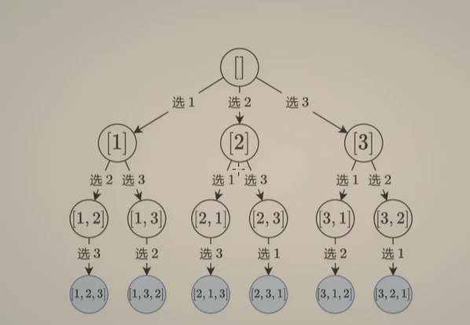
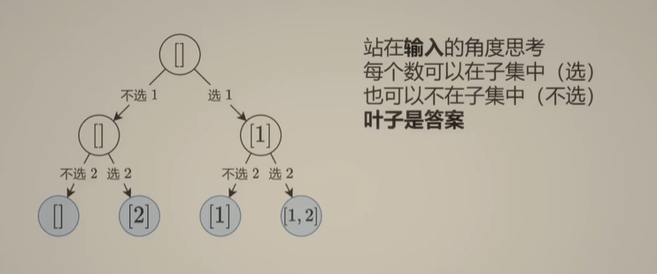
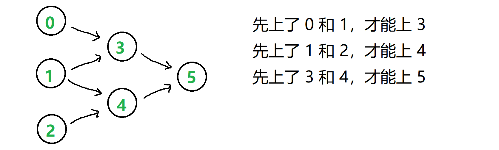
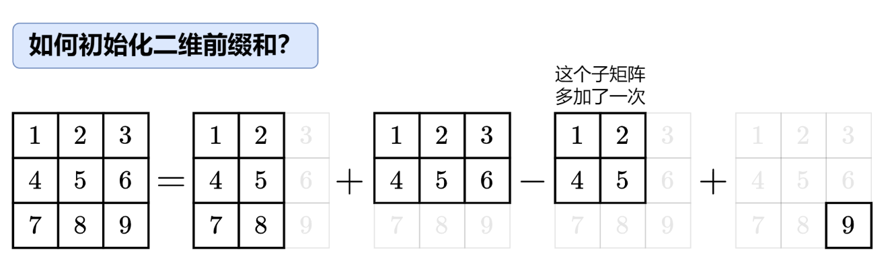
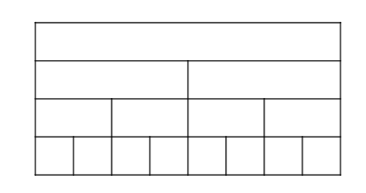
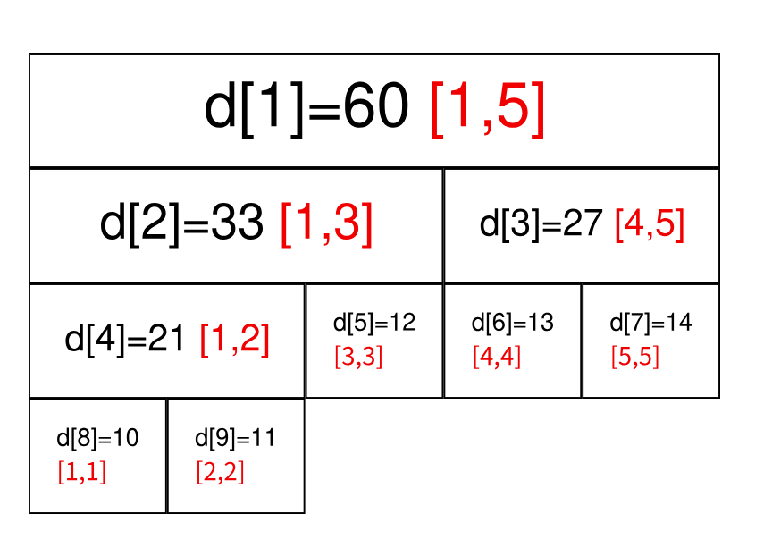
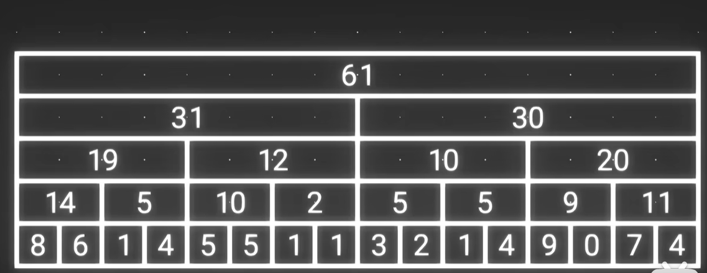
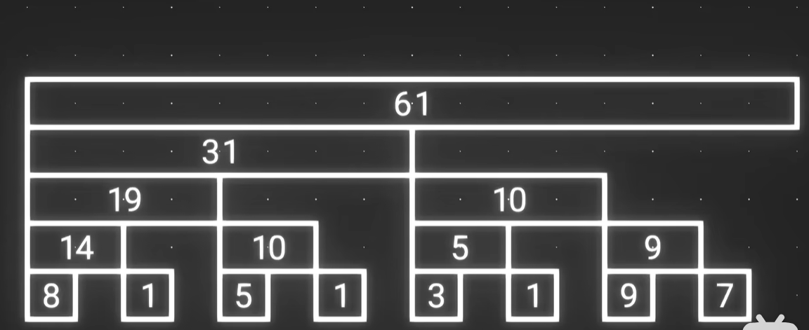
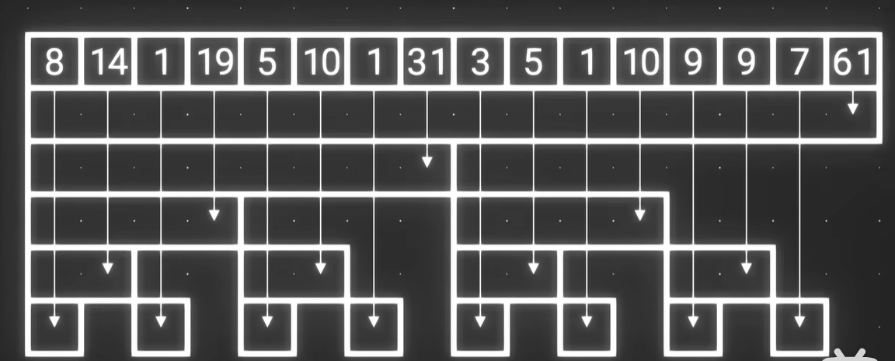

LEETCODE 刷题思路记录¶
约 22179 个字 119 行代码 9 张图片 预计阅读时间 75 分钟
Reference¶
- https://leetcode.cn/studyplan/top-interview-150/
- https://leetcode.cn/studyplan/top-100-liked/
动态规划¶
动规遍历的都是子目标
爬楼梯¶
爬楼梯问题的本质：到达子目标的方式有多种，计算到达总目标的方式个数.
-
假设你正在爬楼梯。需要 n 阶你才能到达楼顶。每次你可以爬 1 或 2 个台阶。你有多少种不同的方法可以爬到楼顶呢？70.爬楼梯
- 要爬n阶，则最后到达第n+1个平台
- dp，长度为n+1，dp[0]=1，dp[1]=1，在第一和第二个平台都就只有一种方式
- dp[i] = dp[i-1]+dp[i-2]，i>=2
- 返回dp[-1]
-
给你一个整数数组 cost ，其中 cost[i] 是从楼梯第 i 个台阶向上爬需要支付的费用。一旦你支付此费用，即可选择向上爬一个或者两个台阶。你可以选择从下标为 0 或下标为 1 的台阶开始爬楼梯。请你计算并返回达到楼梯顶部的最低花费。746.使用最小花费爬楼梯
- 假设cost的长度为n，则有n+1个平台
- dp，长度为n+1，dp[0]=0，到达第0个平台的费用，dp[1]=min(cost[0],0)，到达第1个平台的最下费用，dp[2] = min(dp[0]+cost[0],dp[1]+cost[1])
- dp[i] = min(dp[i-1]+cost[i-1],cost[i-2]+dp[i-2]),i>=3
- 返回dp[-1]
-
给你一个由 不同 整数组成的数组 nums ，和一个目标整数 target 。请你从 nums 中找出并返回总和为 target 的元素组合的个数。题目数据保证答案符合 32 位整数范围。1 <= nums[i] <= 1000.377.组合总和IV
- dp,长度为target+1,dp[0]=1，总和为0的元素组合个数（由于nums的数都是正数，所以元素组合=[]时，和为0
- dp[i] += dp[i-nums[j]] for j in range(len(nums)) if i>=nums[j]
- 返回dp[-1]
打家劫舍¶
-
你是一个专业的小偷，计划偷窃沿街的房屋。每间房内都藏有一定的现金，影响你偷窃的唯一制约因素就是相邻的房屋装有相互连通的防盗系统，如果两间相邻的房屋在同一晚上被小偷闯入，系统会自动报警。给定一个代表每个房屋存放金额的非负整数数组，计算你 不触动警报装置的情况下 ，一夜之内能够偷窃到的最高金额。198.打家劫舍
- dp，长度为房屋数量n，dp[0]=nums[0]，偷第一个房子拿到最多的钱, dp[1] = max(dp[0],nums[1])，偷到第二个房子拿到最多的钱,dp[2] = max(dp[0]+nums[2],dp[1])，偷到第三个房子拿到最多的钱, dp[3] = max(dp[1]+nums[3],dp[2])，偷到第四个房子拿到最多的钱.
- dp[i] = max(dp[i-2]+nums[i],dp[i-1])，i>=2
- 返回dp[-1]
-
你是一个专业的小偷，计划偷窃沿街的房屋，每间房内都藏有一定的现金。这个地方所有的房屋都 围成一圈 ，这意味着第一个房屋和最后一个房屋是紧挨着的。同时，相邻的房屋装有相互连通的防盗系统，如果两间相邻的房屋在同一晚上被小偷闯入，系统会自动报警 。给定一个代表每个房屋存放金额的非负整数数组，计算你 在不触动警报装置的情况下 ，今晚能够偷窃到的最高金额。213.打家劫舍II
- 分类讨论：偷nums[0]和不偷nums[0]
- 如果偷nums[0]，那么nums[1],nums[n-1]不能偷，那么nums[2]到nums[n-2]按I的方法做就行，后面再加上nums[0]
- 如果不偷nums[0]，那么nums[1]，nums[n-1]可以偷，那么nums[1]到nums[n-1]按I的方法做就行
- 最后比较哪个大
-
小偷又发现了一个新的可行窃的地区。这个地区只有一个入口，我们称之为 root 。除了 root 之外，每栋房子有且只有一个“父“房子与之相连。一番侦察之后，聪明的小偷意识到“这个地方的所有房屋的排列类似于一棵二叉树”。 如果 两个直接相连的房子在同一天晚上被打劫 ，房屋将自动报警。给定二叉树的 root 。返回 在不触动警报的情况下 ，小偷能够盗取的最高金额 。337.打家劫舍III
- 由于知道子目标的结果，才能知道总目标的结果，所以遍历树的形式是自底向上遍历树（后序遍历），遍历返回选和不选的结果
- 如果选择父节点，那么左右节点就不选，rob = left_not_rob+right_not_rob+node.val, 如果不选父节点，那么左右节点可以选，那么看not_rob = max(left_rob,left_not_rob)+max(right_rob,right_not_rob)
- 最后回到根节点比较not_rob和rob
最大子数组和¶
-
给你一个整数数组 nums ，请你找出一个具有最大和的连续子数组（子数组最少包含一个元素），返回其最大和。子数组是数组中的一个连续部分。53.最大子数组和
- 子数组不能使用回溯的选与不选，因为要保持顺序，一般使用拼接的形式
- 假设nums的长度为n
- dp的长度为n，dp[0]=nums[0]，以nums[0]结尾的最大子数组和为nums[0]，dp[1]=max(dp[0],0)+nums[1]，以nums[1]结尾的最大子数组和，只有当前面的最大子数组和大于0时，拼接nums[1]才能使子数组的和可能增加.
- dp[i] = max(dp[i-1],0)+nums[i],i>=2
- 最后返回max(dp)
-
给你一个整数数组，返回它的某个 非空 子数组（连续元素）在执行一次可选的删除操作后，所能得到的最大元素总和。换句话说，你可以从原数组中选出一个子数组，并可以决定要不要从中删除一个元素（只能删一次哦），（删除后）子数组中至少应当有一个元素，然后该子数组（剩下）的元素总和是所有子数组之中最大的。注意，删除一个元素后，子数组 不能为空。1186.删除一次得到子数组最大和
-
给你一个整数数组 nums ，请你找出数组中乘积最大的非空连续 子数组（该子数组中至少包含一个数字），并返回该子数组所对应的乘积。测试用例的答案是一个 32-位 整数。152.乘积最大子数组
-
给定一个整数数组 arr 和一个整数 k ，通过重复 k 次来修改数组。例如，如果 arr = [1, 2] ， k = 3 ，那么修改后的数组将是 [1, 2, 1, 2, 1, 2] 。返回修改后的数组中的最大的子数组之和。注意，子数组长度可以是 0，在这种情况下它的总和也是 0。由于 结果可能会很大，需要返回的 109 + 7 的 模 。1191.K次串联后最大子数组之和
-
给定一个长度为 n 的环形整数数组 nums ，返回 nums 的非空 子数组 的最大可能和 。环形数组 意味着数组的末端将会与开头相连呈环状。形式上， nums[i] 的下一个元素是 nums[(i + 1) % n] ， nums[i] 的前一个元素是 nums[(i - 1 + n) % n] 。子数组 最多只能包含固定缓冲区 nums 中的每个元素一次。形式上，对于子数组 nums[i], nums[i + 1], ..., nums[j] ，不存在 i <= k1, k2 <= j 其中 k1 % n == k2 % n 。918.环形子数组的最大和
网格DP¶
-
给定一个包含非负整数的 m x n 网格 grid ，请找出一条从左上角到右下角的路径，使得路径上的数字总和为最小。说明：每次只能向下或者向右移动一步。64.最小路径和
- 二维dp，维度为m*n
- dp[0][0]=grid[0][0]，到达(0,0)的最小路径和为grid[0][0]; dp[0][j] = dp[0][j-1] + grid[0][j],j>=1; dp[i][0] = dp[i-1][0]+grid[i][0],i>=1;
- dp[i][j] = min(dp[i-1][j],dp[i][j-1])+grid[i][j],i>=1,j>=1;
- 返回dp[-1][-1]
-
一个机器人位于一个 m x n 网格的左上角 （起始点在下图中标记为 “Start” ）。机器人每次只能向下或者向右移动一步。机器人试图达到网格的右下角（在下图中标记为 “Finish” ）。问总共有多少条不同的路径？62.不同路径
- 二维dp
-
给定一个 m x n 的整数数组 grid。一个机器人初始位于 左上角（即 grid[0][0]）。机器人尝试移动到 右下角（即 grid[m - 1][n - 1]）。机器人每次只能向下或者向右移动一步。网格中的障碍物和空位置分别用 1 和 0 来表示。机器人的移动路径中不能包含 任何 有障碍物的方格。返回机器人能够到达右下角的不同路径数量。测试用例保证答案小于等于 2 * 109。63.不同路径II
-
在二维网格 grid 上，有 4 种类型的方格：1 表示起始方格。且只有一个起始方格。2 表示结束方格，且只有一个结束方格。0 表示我们可以走过的空方格。-1 表示我们无法跨越的障碍。返回在四个方向（上、下、左、右）上行走时，从起始方格到结束方格的不同路径的数目。每一个无障碍方格都要通过一次，但是一条路径中不能重复通过同一个方格。980.不同路径III
-
给定一个 m x n 整数矩阵 matrix ，找出其中 最长递增路径 的长度。对于每个单元格，你可以往上，下，左，右四个方向移动。 你 不能 在 对角线 方向上移动或移动到 边界外（即不允许环绕）。329.矩阵中的最长递增路径
-
给你一个 n x n 的网格 grid ，代表一块樱桃地，每个格子由以下三种数字的一种来表示：0 表示这个格子是空的，所以你可以穿过它。1 表示这个格子里装着一个樱桃，你可以摘到樱桃然后穿过它。-1 表示这个格子里有荆棘，挡着你的路。请你统计并返回：在遵守下列规则的情况下，能摘到的最多樱桃数：从位置 (0, 0) 出发，最后到达 (n - 1, n - 1) ，只能向下或向右走，并且只能穿越有效的格子（即只可以穿过值为 0 或者 1 的格子）；当到达 (n - 1, n - 1) 后，你要继续走，直到返回到 (0, 0) ，只能向上或向左走，并且只能穿越有效的格子；当你经过一个格子且这个格子包含一个樱桃时，你将摘到樱桃并且这个格子会变成空的（值变为 0 ）；如果在 (0, 0) 和 (n - 1, n - 1) 之间不存在一条可经过的路径，则无法摘到任何一个樱桃。741.摘樱桃
-
给你一个 rows x cols 的矩阵 grid 来表示一块樱桃地。 grid 中每个格子的数字表示你能获得的樱桃数目。你有两个机器人帮你收集樱桃，机器人 1 从左上角格子 (0,0) 出发，机器人 2 从右上角格子 (0, cols-1) 出发。请你按照如下规则，返回两个机器人能收集的最多樱桃数目：从格子 (i,j) 出发，机器人可以移动到格子 (i+1, j-1)，(i+1, j) 或者 (i+1, j+1) 。当一个机器人经过某个格子时，它会把该格子内所有的樱桃都摘走，然后这个位置会变成空格子，即没有樱桃的格子。当两个机器人同时到达同一个格子时，它们中只有一个可以摘到樱桃。两个机器人在任意时刻都不能移动到 grid 外面。两个机器人最后都要到达 grid 最底下一行。1463.摘樱桃II
背包问题¶
-
01背包
- 核心场景：有 n 个物品和一个容量为 C 的背包。第 i 个物品的重量为 w[i]，价值为 v[i]。每个物品只能选择一次（要么放入背包，要么不放入），求在背包容量不超过 C 的前提下，能装入背包的最大总价值
- 二维dp，维度为(n+1)*(C+1)，因为要考虑C=0，和全部元素不选的情况；dp[0][0]=0,dp[i][0]=0,dp[0][j]=0; dp[i][j]表示前i个对象性质A的和<=j时性质B的最大和；分类讨论，不选i，dp[i][j]=dp[i-1][j]，选i，要找到能装i对应的位置，dp[i][j] = dp[i-1][j-A[i]]+B[i]；因此，dp[i][j] = max(dp[i-1][j],dp[i-1][j-A[i]]+B[i]); 最后返回dp[-1][-1]
- 代码：
def knapsack_01(w, v, C): n = len(w) # 初始化dp数组（n+1行，C+1列） dp = [[0]*(C+1) for _ in range(n+1)] for i in range(1, n+1): # 遍历物品 for j in range(1, C+1): # 遍历容量 # 不选第i个物品 dp[i][j] = dp[i-1][j] # 若能选，则取最大值 if w[i-1] <= j: # 注意物品索引从0开始 dp[i][j] = max(dp[i][j], dp[i-1][j - w[i-1]] + v[i-1]) return dp[-1][-1] - 注意这里是
w[i-1]和v[i-1] - 判断能不能的问题，返回值是布尔类型；计算最大、最小、方案数等问题，返回值是整型
-
给你一个 只包含正整数 的 非空 数组 nums 。请你判断是否可以将这个数组分割成两个子集，使得两个子集的元素和相等。416.分割等和子集
- 如果sum(nums)是奇数，那么不可能分成两个子集的元素和相等
- 如果sum(nums)是偶数，那么就相当于证明是否存在一些元素可以使元素和=sum(nums)/2
- 二维dp，假设n=len(nums)，s=sum(nums), dp的维度为(n+1)*(s/2+1)，要考虑s=0，和全部元素不选; dp[i][j]=True 表示前i个元素里面存在元素使得元素和=j；dp[0][0] = True，所有元素都不选的话，和就是0，dp[i][0] = False, dp[0][j] = False;
- 如果能选nums[i-1]，dp[i][j] = dp[i-1][j-nums[i-1]]，不选nums[i]，dp[i][j] = dp[i-1][j]；因此dp[i][j] = dp[i-1][j-nums[i-1]] or dp[i-1][j].
- 返回 dp[-1][-1]
-
给你一个非负整数数组 nums 和一个整数 target 。向数组中的每个整数前添加 '+' 或 '-' ，然后串联起所有整数，可以构造一个 表达式 ：例如，nums = [2, 1] ，可以在 2 之前添加 '+' ，在 1 之前添加 '-' ，然后串联起来得到表达式 "+2-1" 。返回可以通过上述方法构造的、运算结果等于 target 的不同 表达式 的数目。494.目标和
- 假设s=sum(nums)，添加正号的元素之和为p, 添加负号的元素之和为q，则有 p+q=s，又因为p-q=target，所以有p=(s+target)/2, q=(s-target)/2；只要证明存在元素使得p=(s+target)/2或q=(s-target)/2即可
- 如果target>=0，那么q<p，则选q=(s-target)/2，dp矩阵维度更小
- 如果target<0，那么p<q，则选p=(s+target)/2，dp矩阵维度更小
- 因此只要证明存在元素的元素和=(s-abs(target))/2即可.
- 二维dp，假设n=len(nums),a=(s-abs(target))/2，dp的维度为(n+1)*(a+1)，要考虑s=0和全部元素不选；dp[i][j] 表示前i个元素元素和=(s-abs(target))/2的方案数; dp[0][0]=1, dp[i][0]=, dp[0][j]=Fales
- 不选nums[i-1]，dp[i][j] = dp[i-1][j]，如果能选nums[i-1]，则dp[i][j] = dp[i-1][j] + dp[i-1][j-nums[i-1]]
- 特判：如果s-abs(target)<0，由于nums的数都是非负，则方案数为0
- 特判：如果s-abs(target)是奇数，则方案数为0
-
给你一个下标从 0 开始的整数数组 nums 和一个整数 target 。返回和为 target 的 nums 子序列中，子序列 长度的最大值 。如果不存在和为 target 的子序列，返回 -1 。子序列 指的是从原数组中删除一些或者不删除任何元素后，剩余元素保持原来的顺序构成的数组。2915.和为目标值的最长子序列的长度
- 假设n=len(nums)
- 二维dp，dp的维度为(n+1)*(target+1)；dp[i][j]表示前i个数中和为j的最长子序列长度；注意这里dp初始化是用负无穷，这样可以满足max的逻辑，且不与有效长度混淆；dp[0][0]=0，空序列的和就是0；dp[i][0] = 0，由于nums的数都是正数，因此空序列的和为0；dp[0][j] = -float('inf')；
- 不选nums[i-1]，dp[i][j] = dp[i-1][j]；如果能选nums[i-1]（nums[i-1]<=j且dp[i-1][j-nums[i]]!=-float('inf')，则dp[i][j] = max(dp[i-1][j],dp[i-1][j-nums[i-1]]+1)
-
给你两个 正 整数 n 和 x 。请你返回将 n 表示成一些 互不相同 正整数的 x 次幂之和的方案数。换句话说，你需要返回互不相同整数 [n1, n2, ..., nk] 的集合数目，满足 n = n1^x + n2^x + ... + nk^x 。由于答案可能非常大，请你将它对 10^9 + 7 取余后返回。比方说，n = 160 且 x = 3 ，一个表示 n 的方法是 n = 2^3 + 3^3 + 5^3 。2787.将一个数字表示成幂的和的方案数
- 二维dp，dp的维度为(n+1)*(n+1)；dp[i][j] 表示前i个数，满足j是某些互不相同的正整数的x次幂之和的方案数; dp[0][0]=1，dp[i][0] = 1, dp[0][j] = 0;
- 不选nums[i-1]，则dp[i][j] = dp[i-1][j]；如果能够选numsi-1，dp[i][j] = dp[i-1][j] + dp[i-1][j-math.pow(nums[i-1],x)]
- 由于 (a+b) mod M = ((a mod M) + (b mod M))mod M，所以不选nums[i-1]，则dp[i][j] = dp[i-1][j] % M；如果能够选numsi-1，dp[i][j] = dp[i-1][j] + dp[i-1][j-math.pow(nums[i-1],x)]%M, dp[i][j] = dp[i][j] % M.
-
完全背包
- 零钱兑换
- 完全平方数
最长公共子序列（LCS）¶
-
给定两个字符串 text1 和 text2，返回这两个字符串的最长 公共子序列 的长度。如果不存在 公共子序列 ，返回 0 。一个字符串的 子序列 是指这样一个新的字符串：它是由原字符串在不改变字符的相对顺序的情况下删除某些字符（也可以不删除任何字符）后组成的新字符串。例如，"ace" 是 "abcde" 的子序列，但 "aec" 不是 "abcde" 的子序列。两个字符串的 公共子序列 是这两个字符串所共同拥有的子序列。1143.最长公共子序列
- 假设m=len(text1)，n=len(text2)
- 二维dp，维度为(m+1)*(n+1)，因为要考虑空串；dp[i][j]表示text1的前i个字符和text2的前j个字符的最长公共子序列; dp[0][0] = 0,dp[i][0] = 0,dp[0][j] = 0;
- 如果text1[i-1]！=text2[j-1]，那么dp[i][j] = max(dp[i][j-1],dp[i-1][j])；如果text1[i-1]==text2[j-1]，那么dp[i][j] = dp[i-1][j-1]+1
-
给定两个单词 word1 和 word2 ，返回使得 word1 和 word2 相同所需的最小步数。每步 可以删除任意一个字符串中的一个字符。583.两个字符串的删除操作
- 先求出最长公共子序列长度，然后最长公共子序列以外的字符计数就是对应最小步数。
-
给定两个字符串s1 和 s2，返回 使两个字符串相等所需删除字符的 ASCII 值的最小和 。712.两个字符串的最小ASCII删除和
- 假设m=len(s1),n=len(s2)
- 二维dp，维度为(m+1)*(n+1)，因为要考虑空串；dp[i][j]表示s1的前i个字符和s2的前j个字符相等的最小ASIIC删除和;dp[0][0]=0,dp[i][0]=sum(ASIIC_{i}),dp[0][j] = sum(ASIIC_{j})
- 如果s1[i-1]==s2[j-1]，则dp[i][j] = dp[i-1][j-1]；如果s1[i-1]!=s2[j-1]，则dp[i][j] = min(dp[i-1][j]+ASIIC_{i-1},dp[i][j-1]+ASIIC_{j-1})
-
给你两个单词 word1 和 word2， 请返回将 word1 转换成 word2 所使用的最少操作数。你可以对一个单词进行如下三种操作：插入一个字符，删除一个字符，替换一个字符。72.编辑距离
- 从 A 到 B 的一次插入，相当于从 B 到 A 的一次删除（因为两者都是消除了一个字符的差异，操作方向相反但效果相同，所以在计算最小操作次数时，它们的贡献是一样的，因此等价。）
- 从 B 到 A 的一次插入，相等于从 A 到 B 的一次删除；从 A 到 B 的一次替换，等价于从 B 到 A 的一次替换。
- 因此等价地就只有三种操作：在A中删除一个元素，在B中删除一个元素，在A中替换一个元素；
- 假设m=len(word1),n=len(word2)；
- 二维dp，dp的维度为(m+1)*(n+1)，因为考虑空串；dp[i][j] 表示word1的前i个字符转换成word2所使用的最小操作数; dp[0][0] = 0; dp[i][0] = i; dp[0][j] = j;
- 如果word1[i-1]==word2[j-1]，那么这个字符可以不动，dp[i][j] = dp[i-1][j-1]；如果word1[i-1]!=word2[j-1]，那么dp[i][j]=min(dp[i-1][j],dp[i][j-1],dp[i-1][j-1])+1（分别对应删除word1[i-1]，删除word2[j-1]，替换word1[i-1]变成word2[j-1]）
- 返回dp[-1][-1]
-
给两个整数数组 nums1 和 nums2 ，返回 两个数组中 公共的 、长度最长的子数组的长度 。718.最长重复子数组
- 假设m=len(nums1)，n=len(nums2)
- 二维dp，维度为(m+1)*(n+1)，因为要考虑空串；
与最长公共子序列的区别
-
nums1:[0,1,1,1,1]，nums2:[1,0,1,0,1]，最长公共子序列长度为3，最长重复子数组长度为2
-
表的区别
最长公共子序列：
| 0 | 1 | 1 | 1 | 1 | ||
|---|---|---|---|---|---|---|
| 0 | 0 | 0 | 0 | 0 | 0 | |
| 1 | 0 | 0 | 1 | 1 | 1 | 1 |
| 0 | 0 | 1 | 1 | 1 | 1 | 1 |
| 0 | 0 | 1 | 2 | 2 | 2 | 2 |
| 1 | 0 | 1 | 2 | 2 | 2 | 2 |
| 1 | 0 | 1 | 2 | 3 | 3 | 3 |
最长重复子数组：
| 0 | 1 | 1 | 0 | 1 | ||
|---|---|---|---|---|---|---|
| 0 | 0 | 0 | 0 | 0 | 0 | |
| 1 | 0 | 0 | 1 | 1 | 1 | 1 |
| 0 | 0 | 1 | 1 | 1 | 1 | 1 |
| 1 | 0 | 1 | 2 | 2 | 2 | 2 |
| 0 | 0 | 1 | 2 | 2 | 2 | 2 |
| 1 | 0 | 1 | 2 | 2 | 2 | 3 |
在最后出现最长重复子数组应该时'101'，但是在前面的时候最长重复子数组为'01'占据较多，所以这里不能单纯地用最长公共子序列的方程，因为这里不是简单拼接子序列，而是会出现比较，所以这里最后返回的应该时max(什么)的情况，所以这里dp表应该改为若nums[i-1]==nums[j-1]，则dp[i][j] = dp[i-1][j-1]+1，若nums[i-1]!=nums[j-1]，则dp[i][j] = 0 ，最后返回max(dp)
| 0 | 1 | 1 | 0 | 1 | ||
|---|---|---|---|---|---|---|
| 0 | 0 | 0 | 0 | 0 | 0 | |
| 1 | 0 | 0 | 1 | 1 | 1 | 1 |
| 0 | 0 | 1 | 0 | 0 | 2 | 0 |
| 1 | 0 | 0 | 2 | 1 | 0 | 3 |
| 0 | 0 | 0 | 0 | 0 | 2 | 0 |
| 1 | 0 | 0 | 1 | 1 | 0 | 3 |
最长递增子序列（LIS）¶
-
给你一个整数数组 nums ，找到其中最长严格递增子序列的长度。子序列 是由数组派生而来的序列，删除（或不删除）数组中的元素而不改变其余元素的顺序。例如，[3,6,2,7] 是数组 [0,3,1,6,2,2,7] 的子序列。300.最长递增子序列
- [4,10,4,3,8,9]，这里在前面最长的递增子序列为[4,10]，后面为[3,8,9]，需要换头比较，所有最后返回的是max(什么)
- 假设n=len(nums)
- 二维dp，dp的维度为(n)*(n)；dp[i][j]表示存在以nums[i]结尾长度为j的严格递增子序列
- dp[i][0] = False, dp[i][1] = True；
- dp[i][j] = True (如果存在 k<i and nums[k]<nums[i],dp[k][j-1]=True)
- 只要j那一列有一个True，那么长度j就存在，返回最大的j
- 但是二维会超时，压缩成一维
- 一维dp，dp的维度为n；dp[i]表示以nums[i]结尾的严格递增子序列长度；初始化，dp[i]=1
- dp[i] = max(dp[i],dp[k]+1) for k<i and nums[k]<nums[i]
-
最后返回max(dp[i])
-
时间优化，可以用二分来做，在二维dp中更新dp，需要把i前面的所有k都遍历一边，比较慢；我们可以换一个角度，把dp[i]表示长度为i的严格递增子序列的最小的末尾元素，那么dp的长度就是最长严格递增子序列的长度。
- 我们知道dp一定是严格单调递增的，假设存在j
- dp的元素更新：初始化dp,dp[0]=nums[0]，遍历nums[i]，在dp中找到第一个大于nums[i]的坐标，并替换它，如果不存在则在末尾加入.
- nums = [10,9,2,5,3,7,101,18]
- 在dp中找到第一个大于nums[i]的坐标，并替换它，相当于加了一个分支，沿着新的分支走
-
给你一个整数数组 nums 。nums 的每个元素是 1，2 或 3。在每次操作中，你可以删除 nums 中的一个元素。返回使 nums 成为 非递减 顺序所需操作数的 最小值。2826.将三个组排序
- 找出最长公共子序列的长度l，然后len(nums)-l就是答案
-
假设你是球队的经理。对于即将到来的锦标赛，你想组合一支总体得分最高的球队。球队的得分是球队中所有球员的分数 总和 。然而，球队中的矛盾会限制球员的发挥，所以必须选出一支 没有矛盾 的球队。如果一名年龄较小球员的分数 严格大于 一名年龄较大的球员，则存在矛盾。同龄球员之间不会发生矛盾。给你两个列表 scores 和 ages，其中每组 scores[i] 和 ages[i] 表示第 i 名球员的分数和年龄。请你返回 所有可能的无矛盾球队中得分最高那支的分数 。1626.无矛盾的最佳球队
- 先将(age，score)按age进行升序排序，age相同的按升序排列（这样age相同的才能都被选中），接着在socre的序列中计算递增子序列对应的分数，并且找到最大分数
-
给你一个二维整数数组 envelopes ，其中 envelopes[i] = [wi, hi] ，表示第 i 个信封的宽度和高度。当另一个信封的宽度和高度都比这个信封大的时候，这个信封就可以放进另一个信封里，如同俄罗斯套娃一样。请计算 最多能有多少个 信封能组成一组“俄罗斯套娃”信封（即可以把一个信封放到另一个信封里面）。注意：不允许旋转信封。354.俄罗斯套娃信封问题
-
先将(w,h)按w进行升序排序，w相同的按降序排列（避免w相同的被同时选中），接着在h的序列中找到最长递增子序列长度.
-
超时了，找最长递增子序列长度的部分用二分来做
-
-
给你 n 个长方体 cuboids ，其中第 i 个长方体的长宽高表示为 cuboids[i] = [widthi, lengthi, heighti]（下标从 0 开始）。请你从 cuboids 选出一个 子集 ，并将它们堆叠起来。如果 widthi <= widthj 且 lengthi <= lengthj 且 heighti <= heightj ，你就可以将长方体 i 堆叠在长方体 j 上。你可以通过旋转把长方体的长宽高重新排列，以将它放在另一个长方体上。返回 堆叠长方体 cuboids 可以得到的 最大高度 。1691.堆叠长方体的最大高度
最长回文子序列¶
-
给你一个字符串 s ，找出其中最长的回文子序列，并返回该序列的长度。子序列定义为：不改变剩余字符顺序的情况下，删除某些字符或者不删除任何字符形成的一个序列。516.最长回文子序列
- 假设n = len(s)
- 区间dp（大区间的状态由小区间决定），dp的维度为s*s,dp[i][j]表示区间[i,j]之间的最长回文子序列，dp[i][i]=1,dp[i][j]=0(i>j).
- 长度从l=1到l=n遍历，左端点从i=0开始遍历，即j=i+l,这样可以从长度最小的区间一直遍历长度最大的区间
- s[i]==s[j]时,dp[i][j]=dp[i+1][j-1]+2;s[i]!=s[j]时，dp[i][j]=max(dp[i+1][j],dp[i][j-1])
最优划分¶
最多（最少）可以把序列分割成满足某些要求的序列数
-
给你一个字符串 s，请你将 s 分割成一些子串，使每个子串都是回文串。返回符合要求的 最少分割次数 。132.分割回文串II
- 分割次数少，就意味着每一段尽可能长
- 先用一个矩阵matrix记录下每个区间的是否是回文串,matrix[i][j]=True意味着s[i:j+1]是回文串；判定回文串可以使用长度遍历l+左端点i遍历+计算右端点j=i+l-1的方法进行判断，注意但i==j和j==i+1需要进行特判
- 一维dp，维度为n，dp[i]表示把前i个字符组成的序列分割成回文串的最小分割次数；
- dp初始化，dp=[i for i in range(n)]
- i从1到n-1，k从0到i，对于dp[i]，从后面往前切，则往前找下标最小的可分割点即可，dp[i] = min(dp[k-1]+1,dp[i]) for k in range(i+1) if matrix[k][i]==True，if k==0,dp[i]=0;
- 返回dp[-1]
-
给你一个下标从 0 开始的字符串 s 和一个单词字典 dictionary 。你需要将 s 分割成若干个 互不重叠 的子字符串，每个子字符串都在 dictionary 中出现过。s 中可能会有一些 额外的字符 不在任何子字符串中。请你采取最优策略分割 s ，使剩下的字符 最少 。2707.字符串中的额外字符
- 一维dp，维度为n，dp[i]表示把前i个字符组成的序列采用最优分割，剩下的最少字符；
- dp初始化，dp=[i+1 for i in range(n)]
- 如果s[0] in dictionary, dp[0]=0
- i从1到n-1，k从0到i：
- 如果s[0:i+1] in dictionary, 则dp[i] = 0
- 如果s[k:i+1] in dictionary, 则dp[i] = (前k-1个字符结果dp[k-1]，dp[i])
- 如果s[k:i+1] not in dictionary，dp[i]= (前k-1个字符结果dp[k-1]+(i-k+1)，dp[i])
- 返回dp[-1]
-
给你一个二进制字符串 s ，你需要将字符串分割成一个或者多个 子字符串 ，使每个子字符串都是 美丽 的。如果一个字符串满足以下条件，我们称它是 美丽 的：它不包含前导 0 。它是 5 的幂的 二进制 表示。请你返回分割后的子字符串的 最少 数目。如果无法将字符串 s 分割成美丽子字符串，请你返回 -1 。子字符串是一个字符串中一段连续的字符序列。2767.将字符串分割为最少的美丽子字符串
- n=len(s)
- 一维dp，维度为n，dp[i]表示把前i个字符分成成美丽字符串的个数
- dp初始化, dp不能初始化为[0 for i in range(n)]，如果后续使用dp[i] = max(dp[k-1]+1,1)，这里则默认[0:k-1]是有效分割
- dp初始化，dp=[float('inf') for i in range(n)]
- 判断子串t是美丽串的函数：t[0]0 (return False), t[0]==1, 判断是否是5的幂，先二进制转十进制 (num=0, for i in t: num=num*2+(1 if i'1' else 0))，再看是否是5的倍数 (num%5==0)，再看一直除以5之后最后是否只剩下1 (while num>1: num = num//5)
- 如果s[0:i+1]是美丽串，那么dp[i]=0
- i从1到n-1，k从1到n，如果dp[k:i+1]是美丽串，那么dp[i]=min(dp[k-1]+1,dp[i])
-
一条包含字母 A-Z 的消息通过以下映射进行了 编码 ： "1" -> 'A',"2" -> 'B',...,"25" -> 'Y',"26" -> 'Z' 然而，在 解码 已编码的消息时，你意识到有许多不同的方式来解码，因为有些编码被包含在其它编码当中（"2" 和 "5" 与 "25"）。 例如，"11106" 可以映射为： "AAJF" ，将消息分组为 (1, 1, 10, 6) "KJF" ，将消息分组为 (11, 10, 6) 消息不能分组为 (1, 11, 06) ，因为 "06" 不是一个合法编码（只有 "6" 是合法的）。 注意，可能存在无法解码的字符串。给你一个只含数字的 非空 字符串 s ，请计算并返回 解码 方法的 总数 。如果没有合法的方式解码整个字符串，返回 0。题目数据保证答案肯定是一个 32 位 的整数。91.解码方法
- 有点类似爬楼梯，
- n = len(s)
- 一位dp，维度为n，dp[i]表示由s的前i个字符组成的子串的解码方法总数
- dp初始化，dp=[0 for i in range(n)]
- dp[0] = 1，如果是s[0]!=0
- i从2到n-1，if s[i-1:i+1]有效且s[i]有效，那么dp[i] = dp[i-1]+dp[i-2]，如果s[i-1:i+1]无效且s[i]有效，那么dp[i] = dp[i-1]，如果s[i-1:i+1]有效但是s[i]无效，那么dp[i] = dp[i-2]，如果s[i-1:i+1]无效且s[i]无效，那么说明存在子串'00'，这样s无法有效编码，返回0
-
给你一个整数数组 arr，请你将该数组分隔为长度 最多 为 k 的一些（连续）子数组。分隔完成后，每个子数组的中的所有值都会变为该子数组中的最大值。返回将数组分隔变换后能够得到的元素最大和。本题所用到的测试用例会确保答案是一个 32 位整数。1043.分隔数组以得到最大和
- n=len(arr)
- 一维dp，dp维度为dp[i]表示前i个数组成的子数组的分隔最大和
- dp初始化, dp[0 for i in range(n)]
- dp[0] = arr[0]
- i从1到n-1，长度le从k到1, 左端点left = i-k+1，如果left<0，则到下一个i，如果left==0, dp[i] = max(max(arr[left:i+1])le,dp[i])，如果left>0: dp[i]=max(dp[left-1]+max(arr[left:i+1])le,dp[i]).
- 这里le可以从1到k，这样可以把当前的最大值mx存起来，然后下次只要算max(mx,arr[left]),就不用反复计算max[left:i+1]，但是le从k到1就要反复计算
恰好划分¶
-
给定数组 nums 和一个整数 k 。我们将给定的数组 nums 分成 最多 k 个非空子数组，且数组内部是连续的 。 分数 由每个子数组内的平均值的总和构成。注意我们必须使用 nums 数组中的每一个数进行分组，并且分数不一定需要是整数。返回我们所能得到的最大 分数 是多少。答案误差在 10-6 内被视为是正确的。813.最大平均值和的分组
- 平均值和最大的分组的子数组数目必定是k，假设目前分组的子数组数目为m
1，假设这个子数组为第i个子数组，假设我们在这个子数组的x,y处再次进行分割，假设这个子数组目前的平均值和为a，那么分割后新的平均值和为 (a*c-sum(x:y))/(c-count(x:y))+ave(x:y) >a，因此继续分割会使平均值和变大，故分割到k个子数组的平均值和会最大。¶
状态机DP¶
-
给定一个数组 prices ，它的第 i 个元素 prices[i] 表示一支给定股票第 i 天的价格。你只能选择 某一天 买入这只股票，并选择在 未来的某一个不同的日子 卖出该股票。设计一个算法来计算你所能获取的最大利润。返回你可以从这笔交易中获取的最大利润。如果你不能获取任何利润，返回 0.121.买卖股票的最佳时机
- 低买高卖
- 一维dp，dp[i]表示在第i天以来前面天数的最小值
- dp[0] = prices[0], dp[i] = min(prices[i],dp[i-1])
- 返回max(prices[i]-dp[i])
-
给你一个整数数组 prices ，其中 prices[i] 表示某支股票第 i 天的价格。在每一天，你可以决定是否购买和/或出售股票。你在任何时候 最多 只能持有 一股 股票。你也可以先购买，然后在 同一天 出售。返回 你能获得的 最大 利润 。122.买卖股票的最佳时机II
- 二维dp,假设n=len(prices)
- 维度为n*2,当天有两种状态：总得来说进行了一次买，总得来说进行了一次卖，从前面算来的最大利润；当天有一支股票，从前面算来的最大利润；
- dp[i][j]表示假设到达该状态的最大利润
- dp[0][0] = 0,dp[0][1] = -prices[0]
- j=0，当天没股票，可能是昨天就没有股票，或者是昨天有股票今天卖了，dp[i][0] = max(dp[i-1][0],dp[i-1][1]+prices[i])
- j=1，当天有股票，可能是昨天就有股票，或者是昨天没有股票今天买的，dp[i][1] = max(dp[i-1][0]-prices[i],dp[i-1][1])
- return max(dp[i][j])
-
给定一个数组，它的第 i 个元素是一支给定的股票在第 i 天的价格。设计一个算法来计算你所能获取的最大利润。你最多可以完成 两笔 交易。注意：你不能同时参与多笔交易（你必须在再次购买前出售掉之前的股票）。123.买卖股票的最佳时机III
- 二维dp，假设n=len(prices)
- 用一个集合记录卖出股票的对应天i
- dp[i][j] 初始化为 -float('inf')
- 维度为n*4，当天有四种状态：进行了一次买，进行了一次买一次卖，进行了两次买一次卖，进行了两次买两次卖
- dp[0][0] = -price[i], dp[0][1] = 0,dp[0][2]=-price[i],dp[0][3] = 0
- j=0，可能昨天以前就买了，或者今天买的，dp[i][0] = max(dp[i-1][0],-prices[i])
- j=1，可能是昨天以前就一次买一次卖了，或者是今天才一次买一次卖，或者昨天以前买的今天卖的，dp[i][1] = max(dp[i-1][1],0,dp[i-1][0]+prices[i])
- j=2，可能是昨天以前就两次买一次卖了，或者今天才两次买一次卖，或者昨天以前买了一次买今天一次买一次卖，或者昨天以前一次买今天一次买一次卖，dp[i][2] = max(dp[i-1][0],-prices[i],dp[i-1][1]-prices[i],dp[i-1][2])
- j=3，可能是昨天以前就两次买两次卖了，或者今天才两次买两次卖，或者昨天以前一次买一次卖今天一次买一次卖，或者昨天以前一次买今天一次买两次卖，或者昨天以前两次买一次卖今天卖，dp[i][3] = max(dp[i-1][3],0,dp[i-1][1],dp[i-1][0]+prices[i],dp[i-1][2]+prices[i])
-
取max(dp)
- 另外一种做法
- 三维dp
- dp[i][j][0] 表示到第i天完成了至多j笔交易，第i天结束时没有股票的最大利润
- dp[i][j][1] 表示到第i天完成了至多j-1笔交易，第i天结束时持有第j笔交易股票的最大利润
- j=0,1,2，这里要注意完成一次交易，是一买一卖
- 第i天至多完成j笔交易且当天没有股票，可能是昨天至多完成了j笔交易没有股票了然后今天不动，也可能是昨天就有股票，今天卖，dp[i][j][0] = max(dp[i-1][j][0],dp[i-1][j][1]+prices[i])
- 第i天有股票，可能是昨天就有股票了，也可能是昨天没有股票今天买，dp[i][j][1] = max(dp[i-1][j][1],dp[i-1][j-1][0]-prices[i])
- 初始化,dp[i][j][0],dp[i][j][1]都是-float('inf')
- j=0特殊处理：dp[i][0][0] = 0,dp[i][0][1] = -prices[i]
- j从1开始到2，i从1到n，最后返回dp[-1][-1][0]
-
给你一个整数数组 prices 和一个整数 k ，其中 prices[i] 是某支给定的股票在第 i 天的价格。设计一个算法来计算你所能获取的最大利润。你最多可以完成 k 笔交易。也就是说，你最多可以买 k 次，卖 k 次。注意：你不能同时参与多笔交易（你必须在再次购买前出售掉之前的股票）。188.买卖股票的最佳时机IV
- 二维dp，假设n=len(prices)
- 维度为n*2k，状态分别为：一次买0次卖，一次买一次卖，...，k次买k-1次卖，k次买k次卖
- dp[i][j] 初始化为 -float('inf')
- j为偶数时，dp[0][j] = -prices[0]
- j为奇数时，dp[0][j] = 0
- 第i天不改变策略，dp[i][j] = dp[i-1][j]
- 第i天改变策略
- for t in range(j):
-
- if j为偶数，t为偶数：假设j为两次买一次卖，t为一次买0次卖，那么dp[i][j] = max(dp[i][j],dp[i-1][t])
-
- if j为奇数，t为偶数：假设j为一次买一次卖，t为一次买0次卖，那么dp[i][j] = max(dp[i][j],dp[i-1][t] + prices[i])
-
- if j为偶数，t为奇数：假设j为两次买一次卖，t为一次买一次卖，那么dp[i][j] = max(dp[i][j],dp[i-1][t] - prices[i])
-
- if j为奇数，t为奇数：假设j为两次买两次卖，t为一次买一次卖，那么dp[i][j] = max(dp[i][j],dp[i-1][t])
- 另外一种做法
- 三维dp
- dp[i][j][0] 表示到第i天完成了至多j笔交易，第i天结束时没有股票的最大利润
- dp[i][j][1] 表示到第i天完成了至多j-1笔交易，第i天结束时持有第j笔交易股票的最大利润
- j=0,1,...k，这里要注意完成一次交易，是一买一卖
- 第i天至多完成j笔交易且当天没有股票，可能是昨天至多完成了j笔交易没有股票了然后今天不动，也可能是昨天就有股票，今天卖，dp[i][j][0] = max(dp[i-1][j][0],dp[i-1][j][1]+prices[i])
- 第i天有股票，可能是昨天就有股票了，也可能是昨天没有股票今天买，dp[i][j][1] = max(dp[i-1][j][1],dp[i-1][j-1][0]-prices[i])
- 初始化,dp[i][j][0],dp[i][j][1]都是-float('inf')
- j=0特殊处理：dp[i][0][0] = 0,dp[i][0][1] = -prices[i]
- j从1开始到2，i从1到n，最后返回dp[-1][-1][0]
-
给你一个整数数组 prices，其中 prices[i] 是第 i 天股票的价格（美元），以及一个整数 k。你最多可以进行 k 笔交易，每笔交易可以是以下任一类型：普通交易：在第 i 天买入，然后在之后的第 j 天卖出，其中 i < j。你的利润是 prices[j] - prices[i]。做空交易：在第 i 天卖出，然后在之后的第 j 天买回，其中 i < j。你的利润是 prices[i] - prices[j]。注意：你必须在开始下一笔交易之前完成当前交易。此外，你不能在已经进行买入或卖出操作的同一天再次进行买入或卖出操作。通过进行 最多 k 笔交易，返回你可以获得的最大总利润。3573.买卖股票的最佳时机V
- 三维dp
- dp[i][j][0] 表示到第i天完成了至多j笔交易，第i天结束时没有股票的最大利润
- dp[i][j][1] 表示到第i天完成了至多j-1笔交易，第i天结束时持有第j笔交易股票的最大利润
- dp[i][j][2] 表示到第i天完成了至多j-1笔交易，第i天结束时做空第j笔交易股票的最大利润
- j=0,1,...k，这里要注意完成一次交易，是一买一卖或者一卖一买
- 第i天至多完成j笔交易且当天没有股票，可能是昨天至多完成了j笔交易没有股票了然后今天不动，也可能是昨天就有股票，今天卖，也可能是昨天做空，今天买，dp[i][j][0] = max(dp[i-1][j][0],dp[i-1][j][1]+prices[i],dp[i-1][j][2]-prices[i])
- 第i天有股票，可能是昨天就有股票了，也可能是昨天没有股票今天买，dp[i][j][1] = max(dp[i-1][j][1],dp[i-1][j-1][0]-prices[i])
- 第i天做空股票，可能是昨天就做空了，也可能是今天才开始做空，dp[i][j][2] = max(dp[i-1][j][2],dp[i-1][j-1][0]+prices[i])
- 初始化,dp[i][j][0],dp[i][j][1]都是-float('inf')
- j=0特殊处理：dp[i][0][0] = 0,dp[i][0][1] = -prices[i],dp[i][0][2] = prices[i]
- j从1开始到2，i从1到n，最后返回dp[-1][-1][0]
-
给定一个整数数组prices，其中第 prices[i] 表示第 i 天的股票价格 。设计一个算法计算出最大利润。在满足以下约束条件下，你可以尽可能地完成更多的交易（多次买卖一支股票）:卖出股票后，你无法在第二天买入股票 (即冷冻期为 1 天)。注意：你不能同时参与多笔交易（你必须在再次购买前出售掉之前的股票）。309.买卖股票的最佳时机含冷冻期
- 二维dp
- dp[i][0] 表示到第i天结束时没有股票，且第i+1天不是冷冻期的最大利润
- dp[i][1] 表示到第i天结束时没有股票，且第i+1天是冷冻期的最大利润
- dp[i][2] 表示到第i天结束时持有股票的最大利润
- 第i天没有股票且第i+1天不是冷冻期，即第i天没有进行卖出操作，可能是第i-1天就没有股票了，也可能是第i-1天进行了卖出操作，第i天是冷冻期，dp[i][0] = max(dp[i-1][0],dp[i-1][1])
- 第i天没有股票且是第i+1天是冷冻期，则是第i天卖了股票，dp[i][1] = dp[i-1][2]+prices[i]
- 第i天有股票，可能是昨天就有股票了，也可能是今天不是冷冻期，今天买股票，dp[i][2] = max(dp[i-1][2],dp[i-1][0]-prices[i])
- 初始化：dp[i][j] = -float('inf')
- dp[0][0]=0, dp[0][1]=0,dp[0][2] = -prices[0]
- 返回max(dp)
-
给定一个整数数组 prices，其中 prices[i]表示第 i 天的股票价格 ；整数 fee 代表了交易股票的手续费用。你可以无限次地完成交易，但是你每笔交易都需要付手续费。如果你已经购买了一个股票，在卖出它之前你就不能再继续购买股票了。返回获得利润的最大值。注意：这里的一笔交易指买入持有并卖出股票的整个过程，每笔交易你只需要为支付一次手续费。714.买卖股票的最佳时机含手续费
- 二维dp
- dp[i][0]：第i天结束没有股票
- dp[i][1]：第i天结束有股票
- 第i天没有股票，可能是昨天就没有股票，也可能昨天有股票，今天卖了股票，dp[i][0] = max(dp[i-1][0],dp[i-1][1]+prices[i]-fee)
- 第i天有股票，可能是昨天就有股票，也可能是昨天没有股票，今天卖了股票, dp[i][1] = max(dp[i-1][1],dp[i-1][0]-prices[i])
- 返回max(dp)
-
来自未来的体育科学家给你两个整数数组 energyDrinkA 和 energyDrinkB，数组长度都等于 n。这两个数组分别代表 A、B 两种不同能量饮料每小时所能提供的强化能量。你需要每小时饮用一种能量饮料来 最大化 你的总强化能量。然而，如果从一种能量饮料切换到另一种，你需要等待一小时来梳理身体的能量体系（在那个小时里你将不会获得任何强化能量）。返回在接下来的 n 小时内你能获得的 最大 总强化能量。注意 你可以选择从饮用任意一种能量饮料开始。3259.超级饮料的最大强化能量
- 二维dp
- dp[i][0]：在第i个小时饮用饮料A获取能量获取的最大能量
- dp[i][1]：在第i个小时饮用饮料B获取能量获取的最大能量
- 在第i个小时饮用饮料A获取能量，可能在第i-1个小时就已经开始饮用饮料A获取能量，也可能是在第i-2个小时饮用饮料B然后经过1个小时后转到饮料A, dp[i][0] = max(dp[i-1][0]+energyDrinkA[i],dp[i-2][1]+energyDrinkA[i])
- 在第i个小时饮用饮料B获取能量，可能在第i-1个小时就已经开始饮用饮料B获取能量，也可能是在第i-2个小时饮用饮料A然后经过1个小时后转到饮料B, dp[i][1] = max(dp[i-1][1]+energyDrinkB[i],dp[i-2][0]+energyDrinkB[i])
- 初始化，dp[i][j] = -float('inf')
- dp[0][0] = energyDrinkA[0],dp[0][1]=energyDrinkB[0], dp[1][0] = dp[0][0]+energyDrinkA[1], dp[1][1] = dp[0][1]+energyDrinkB[1]
- 返回max(dp)
-
给你一个下标从 0 开始的二进制字符串 s ，它表示一条街沿途的建筑类型，其中：s[i] = '0' 表示第 i 栋建筑是一栋办公楼，s[i] = '1' 表示第 i 栋建筑是一间餐厅。作为市政厅的官员，你需要随机 选择 3 栋建筑。然而，为了确保多样性，选出来的 3 栋建筑 相邻 的两栋不能是同一类型。比方说，给你 s = "001101" ，我们不能选择第 1 ，3 和 5 栋建筑，因为得到的子序列是 "011" ，有相邻两栋建筑是同一类型，所以 不合 题意。 请你返回可以选择 3 栋建筑的 有效方案数 。2222.选择建筑的方案数
跳跃游戏¶
-
给你一个非负整数数组 nums ，你最初位于数组的 第一个下标 。数组中的每个元素代表你在该位置可以跳跃的最大长度。判断你是否能够到达最后一个下标，如果可以，返回 true ；否则，返回 false 。55.跳跃游戏
- 一维dp
- dp[i] 表示能否跳到第i个下标
- dp[0] = True
- dp[i] = (dp[i] or nums[k]>=(k-i)) for k in range(i-1,-1,-1) if dp[k]=True，k最好从后往前遍历，这样可能遍历的次数会少一点，如果dp[i]为True了，就可以退出k的遍历
- 返回dp[-1]
-
给定一个长度为 n 的 0 索引整数数组 nums。初始位置在下标 0。每个元素 nums[i] 表示从索引 i 向后跳转的最大长度。换句话说，如果你在索引 i 处，你可以跳转到任意 (i + j) 处：0 <= j <= nums[i] 且 i + j < n，返回到达 n - 1 的最小跳跃次数。测试用例保证可以到达 n - 1。
- 一维dp
- dp[i] 表示跳到索引i的最小跳跃次数
- dp[i] 初始化 n+1，用float('inf')会超时，可能比较会比较久
- dp[0] = 0
- dp[i] = min(dp[i],dp[k]+1) for k in range(i-1,-1,-1) if dp[k]
- 返回dp[-1]
-
这里有一个非负整数数组 arr，你最开始位于该数组的起始下标 start 处。当你位于下标 i 处时，你可以跳到 i + arr[i] 或者 i - arr[i]。请你判断自己是否能够跳到对应元素值为 0 的 任一 下标处。注意，不管是什么情况下，你都无法跳到数组之外。1306.跳跃游戏III
- dfs¶
-
给你一个下标从 0 开始的整数数组 nums 和一个整数 k 。一开始你在下标 0 处。每一步，你最多可以往前跳 k 步，但你不能跳出数组的边界。也就是说，你可以从下标 i 跳到 [i + 1， min(n - 1, i + k)] 包含 两个端点的任意位置。你的目标是到达数组最后一个位置（下标为 n - 1 ），你的 得分 为经过的所有数字之和。请你返回你能得到的 最大得分 。1696.跳跃游戏VI
前后缀转移DP¶
- 最低票价
- 最低加油次数
不相交区间¶
- 规划兼职工作
- 最多可以参加的会议数目
状压 DP¶
- 优美的排列
- 最小不兼容性
- 最短超级串
- 访问所有节点的最短路径
数位DP¶
树形DP¶
-
监控二叉树
-
最小高度树
前后缀分解¶
- 给你一个整数数组 nums，返回 数组 answer ，其中 answer[i] 等于 nums 中除 nums[i] 之外其余各元素的乘积 。题目数据 保证 数组 nums之中任意元素的全部前缀元素和后缀的乘积都在 32 位 整数范围内。请 不要使用除法，且在 O(n) 时间复杂度内完成此题。238.除自身以外数组的乘积
回溯¶
-
给定一个不含重复数字的数组 nums ，返回其 所有可能的全排列 。你可以 按任意顺序 返回答案。LC46全排列

- 传参是路径，方便添加新的数，路径长度为len(nums)，则返回递归
-
给你一个整数数组 nums ，数组中的元素 互不相同 。返回该数组所有可能的子集（幂集）。解集 不能 包含重复的子集。你可以按 任意顺序 返回解集。LC78子集

- 选与不选，传参用索引，方便判断选还是不选，索引到最后一个数组索引，递归返回，不选的递归写在选的递归的前面
-
给定一个仅包含数字 2-9 的字符串，返回所有它能表示的字母组合。答案可以按 任意顺序 返回。给出数字到字母的映射如下（与电话按键相同）。注意 1 不对应任何字母。LC17电话号码的字母组合
- 递归传参用的是字符的索引，当字符的索引等于字符的长度时，递归返回
- 对于同一个字符，用for循环来避免重复选取数字
-
给定两个整数 n 和 k，返回范围 [1, n] 中所有可能的 k 个数的组合。你可以按 任何顺序 返回答案。LC77组合
- 选与不选，
-
给你一个 无重复元素 的整数数组 candidates 和一个目标整数 target ，找出 candidates 中可以使数字和为目标数 target 的 所有 不同组合 ，并以列表形式返回。你可以按 任意顺序 返回这些组合。candidates 中的 同一个 数字可以 无限制重复被选取 。如果至少一个数字的被选数量不同，则两种组合是不同的。 对于给定的输入，保证和为 target 的不同组合数少于 150 个。LC39组合总和
- 选与不选，但是自己可以重复选，传参是candidates的索引
- candidates先升序排序，
-
给定一个候选人编号的集合 candidates 和一个目标数 target ，找出 candidates 中所有可以使数字和为 target 的组合。candidates 中的每个数字在每个组合中只能使用 一次 。注意：解集不能包含重复的组合。40.组合总和II
-
找出所有相加之和为 n 的 k 个数的组合，且满足下列条件：只使用数字1到9，每个数字 最多使用一次，返回 所有可能的有效组合的列表 。该列表不能包含相同的组合两次，组合可以以任何顺序返回。216.组合总和III
DFS¶
adj_matrix：邻接矩阵，两个节点有边，则邻居矩阵为1，否则为0
n = len(adj_matrix)
stack = [start]
visited = set()
while stack:
node = stack.pop()
if node not in visited:
visited.append(node)
# 这里for循环要在if内，避免节点重复进入stack
# 比如1和2是邻居，1先入栈，接着就是2入栈，如果for在if外，那么下一次1又会入栈，从而导致死循环
for i in range(len(adj_matrix[node])):
if adj_matrix[node][i] and i!=node:
stack.append(i)
def dfs(node):
if node not in visited:
visited.add(node)
for i in range(len(adj_matrix[node])):
if adj_matrix[node][i] and i!=node:
dfs(i)
-
有一个具有 n 个顶点的 双向 图，其中每个顶点标记从 0 到 n - 1（包含 0 和 n - 1）。图中的边用一个二维整数数组 edges 表示，其中 edges[i] = [ui, vi] 表示顶点 ui 和顶点 vi 之间的双向边。 每个顶点对由 最多一条 边连接，并且没有顶点存在与自身相连的边。请你确定是否存在从顶点 source 开始，到顶点 destination 结束的 有效路径 。给你数组 edges 和整数 n、source 和 destination，如果从 source 到 destination 存在 有效路径 ，则返回 true，否则返回 false 。1971.寻找图中是否存在路径
- 无向图的建图，两边都要建，从source开始DFS，如果最后遍历结束，destination在visited中，则True
-
给你一个有 n 个节点的 有向无环图（DAG），请你找出从节点 0 到节点 n-1 的所有路径并输出（不要求按特定顺序）。graph[i] 是一个从节点 i 可以访问的所有节点的列表（即从节点 i 到节点 graph[i][j]存在一条有向边）。797.所有可能的路径
- 以0为起点的DFS
- 因为这里要得到路径，所以这里要用递归写法的DFS，这里不使用visited，因为要记录路径，加入path数组，在dfs中，如果path[-1]==n-1，那么result加入path的副本，然后return，如果不等于，遍历node的nei在dfs前path.append(nei)，在dfs后path.pop()
DFS寻找连通分量，每一次visited留下来的就是一个连通分量的点
num = 0
while node_set:
start = node_set.pop()
node_set.add(start)
stack = [start]
visited = set()
while stack:
node = stack.pop()
if node not in visited:
visited.add(node)
for nei in graph[node]:
stack.append(nei)
num += 1
node_set = node_set - visited
DFS寻找连通分量数量（时间优化）
num = 0
visited = [False for i in range(n)]
for i in range(n):
if not visited[i]:
stack = [i]
while stack:
node = stack.pop()
if not visited[node]:
visited[node] = True
for nei in graph[node]:
stack.append(nei)
num += 1
并查集寻找连通分量
-
有 n 个城市，其中一些彼此相连，另一些没有相连。如果城市 a 与城市 b 直接相连，且城市 b 与城市 c 直接相连，那么城市 a 与城市 c 间接相连。省份 是一组直接或间接相连的城市，组内不含其他没有相连的城市。给你一个 n x n 的矩阵 isConnected ，其中 isConnected[i][j] = 1 表示第 i 个城市和第 j 个城市直接相连，而 isConnected[i][j] = 0 表示二者不直接相连。返回矩阵中 省份 的数量。547.省份数量
- 用一个node_set存放所有节点
- 从node_set里面随机抽取一个node，以这个node为起点做dfs，访问到一个节点，就将这个节点从node_set中移除，dfs结束之后省份数量+1，接着又从node_set里面抽取一个node，重复前述步骤
-
有 n 个房间，房间按从 0 到 n - 1 编号。最初，除 0 号房间外的其余所有房间都被锁住。你的目标是进入所有的房间。然而，你不能在没有获得钥匙的时候进入锁住的房间。当你进入一个房间，你可能会在里面找到一套 不同的钥匙，每把钥匙上都有对应的房间号，即表示钥匙可以打开的房间。你可以拿上所有钥匙去解锁其他房间。给你一个数组 rooms 其中 rooms[i] 是你进入 i 号房间可以获得的钥匙集合。如果能进入 所有 房间返回 true，否则返回 false。841.钥匙和房间
- 检测连通分量个数，如果连通分量个数大于1，那么则无法访问所有房间
-
给你一个整数 n ，表示一张 无向图 中有 n 个节点，编号为 0 到 n - 1 。同时给你一个二维整数数组 edges ，其中 edges[i] = [ai, bi] 表示节点 ai 和 bi 之间有一条 无向 边。请你返回 无法互相到达 的不同 点对数目 。2316.统计无向图中无法互相到达点对数
- bfs寻找连通分量
- 找来一个node_set存储所有节点，随机出一个节点开始做dfs，每一次dfs结束后，对应的visited里面的元素就是一个连通分量的节点，不同连通分量的节点无法互相到达，假设有y个连通分量，第i个连通分量内的点有x_i，则无法互相到达的点对数为 sum_{i=1,...y}sum_{j=i+1,...,y}x_ix_j
-
用以太网线缆将 n 台计算机连接成一个网络，计算机的编号从 0 到 n-1。线缆用 connections 表示，其中 connections[i] = [a, b] 连接了计算机 a 和 b。网络中的任何一台计算机都可以通过网络直接或者间接访问同一个网络中其他任意一台计算机。给你这个计算机网络的初始布线 connections，你可以拔开任意两台直连计算机之间的线缆，并用它连接一对未直连的计算机。请你计算并返回使所有计算机都连通所需的最少操作次数。如果不可能，则返回 -1 。1319.连通网络的操作数
- 如果边数<n-1，那么不可能全部计算机能够连通在一起
- 如果边数>=n-1，那么用bfs寻找连通分量，最少操作次数=连通分量-1
-
给你一个正整数 n ，表示总共有 n 个城市，城市从 1 到 n 编号。给你一个二维数组 roads ，其中 roads[i] = [ai, bi, distancei] 表示城市 ai 和 bi 之间有一条 双向 道路，道路距离为 distancei 。城市构成的图不一定是连通的。两个城市之间一条路径的 分数 定义为这条路径中道路的 最小 距离。城市 1 和城市 n 之间的所有路径的 最小 分数。注意：一条路径指的是两个城市之间的道路序列。一条路径可以 多次 包含同一条道路，你也可以沿着路径多次到达城市 1 和城市 n 。测试数据保证城市 1 和城市n 之间 至少 有一条路径。2492.两个城市间路径的最小分数
- 由于1和n-1一定有路可达，说明1和n-1一定在同一个连通分量，bfs遍历，并记录下遍历过程中最小分数的边
-
你正在维护一个项目，该项目有 n 个方法，编号从 0 到 n - 1。给你两个整数 n 和 k，以及一个二维整数数组 invocations，其中 invocations[i] = [ai, bi] 表示方法 ai 调用了方法 bi。已知如果方法 k 存在一个已知的 bug。那么方法 k 以及它直接或间接调用的任何方法都被视为 可疑方法 ，我们需要从项目中移除这些方法。只有当一组方法没有被这组之外的任何方法调用时，这组方法才能被移除。返回一个数组，包含移除所有 可疑方法 后剩下的所有方法。你可以以任意顺序返回答案。如果无法移除 所有 可疑方法，则 不 移除任何方法。3310.移除可疑的方法
- 先dfs找k可达的节点，然后dfs剩余的节点里面，看是否有经过k的连通分量的节点，如果有就标记这些节点，剩余的节点就是可返回的节点
-
给定一个列表 accounts，每个元素 accounts[i] 是一个字符串列表，其中第一个元素 accounts[i][0] 是 名称 (name)，其余元素是 emails 表示该账户的邮箱地址。现在，我们想合并这些账户。如果两个账户都有一些共同的邮箱地址，则两个账户必定属于同一个人。请注意，即使两个账户具有相同的名称，它们也可能属于不同的人，因为人们可能具有相同的名称。一个人最初可以拥有任意数量的账户，但其所有账户都具有相同的名称。合并账户后，按以下格式返回账户：每个账户的第一个元素是名称，其余元素是 按字符 ASCII 顺序排列 的邮箱地址。账户本身可以以 任意顺序 返回。721.账户合并
- 把邮箱对应节点，进行建图，在同一个列表的就有一条边，然后找连通分量个数
-
有一个有 n 个节点的有向图，节点按 0 到 n - 1 编号。图由一个 索引从 0 开始 的 2D 整数数组 graph表示， graph[i]是与节点 i 相邻的节点的整数数组，这意味着从节点 i 到 graph[i]中的每个节点都有一条边。如果一个节点没有连出的有向边，则该节点是 终端节点 。如果从该节点开始的所有可能路径都通向 终端节点（或另一个安全节点），则该节点为 安全节点。返回一个由图中所有 安全节点 组成的数组作为答案。答案数组中的元素应当按 升序 排列。802.找到最终的安全状态
BFS¶
BFS遍历
visited = set()
queue = [start]
visited.add(start)
while queue:
node = queue[0]
queue = queue[1:]
for nei in graph[node]:
if nei not in visited:
visited.add(nei)
queue.append(nei)
BFS遍历，且知道层数
visited = set()
queue = [(start,0)]
visited.add(start)
while queue:
node = queue[0]
queue = queue[1:]
for nei in graph[node]:
if nei not in visited:
visited.add(nei)
queue.append((nei,node[1]+1))
BFS可用于求边权为1的图的单源最短路。 BFS 的遍历过程是 “由近及远” 的： 从起点出发，先访问所有距离为 1的节点（直接相邻节点）；再访问所有距离为 2的节点（通过距离为 1 的节点间接可达）；以此类推，每层节点的距离（路径长度）严格递增，且等于其所在的 “层次”。假设存在一个节点v，其最短路径长度为d（即需要d条边到达）。根据 BFS 的遍历顺序：节点v会在第d层被首次访问（因为前d-1层访问的是路径长度小于d的节点，无法到达v）；由于 BFS 不会重复访问节点（通常用visited数组标记），首次访问v时的路径长度d就是最短路径。
-
给你一个整数 n 和一个二维整数数组 queries。有 n 个城市，编号从 0 到 n - 1。初始时，每个城市 i 都有一条单向道路通往城市 i + 1（ 0 <= i < n - 1）。queries[i] = [ui, vi] 表示新建一条从城市 ui 到城市 vi 的单向道路。每次查询后，你需要找到从城市 0 到城市 n - 1 的最短路径的长度。返回一个数组 answer，对于范围 [0, queries.length - 1] 中的每个 i，answer[i] 是处理完前 i + 1 个查询后，从城市 0 到城市 n - 1 的最短路径的长度。3243.新增道路查询后的最短距离I
- 这是边权为1的图，
- 每增加一个query，就跑一次BFS，返回遍历到n-1对应的层数
-
有 n 个人，每个人都有一个 0 到 n-1 的唯一 id 。给你数组 watchedVideos 和 friends ，其中 watchedVideos[i] 和 friends[i] 分别表示 id = i 的人观看过的视频列表和他的好友列表。Level 1 的视频包含所有你好友观看过的视频，level 2 的视频包含所有你好友的好友观看过的视频，以此类推。一般的，Level 为 k 的视频包含所有从你出发，最短距离为 k 的好友观看过的视频。给定你的 id 和一个 level 值，请你找出所有指定 level 的视频，并将它们按观看频率升序返回。如果有频率相同的视频，请将它们按字母顺序从小到大排列。1311.获取你好友已观看的视频
- 根据friends建图，bfs遍历，找到对应level对应的节点，然后把节点对应的movies集合返回
-
给定一个整数 n，即有向图中的节点数，其中节点标记为 0 到 n - 1。图中的每条边为红色或者蓝色，并且可能存在自环或平行边。给定两个数组 redEdges 和 blueEdges，其中：redEdges[i] = [ai, bi] 表示图中存在一条从节点 ai 到节点 bi 的红色有向边，blueEdges[j] = [uj, vj] 表示图中存在一条从节点 uj 到节点 vj 的蓝色有向边。返回长度为 n 的数组 answer，其中 answer[X] 是从节点 0 到节点 X 的红色边和蓝色边交替出现的最短路径的长度。如果不存在这样的路径，那么 answer[x] = -1。1129.颜色交替的最短路径
-
给你一个数组 routes ，表示一系列公交线路，其中每个 routes[i] 表示一条公交线路，第 i 辆公交车将会在上面循环行驶。例如，路线 routes[0] = [1, 5, 7] 表示第 0 辆公交车会一直按序列 1 -> 5 -> 7 -> 1 -> 5 -> 7 -> 1 -> ... 这样的车站路线行驶。现在从 source 车站出发（初始时不在公交车上），要前往 target 车站。 期间仅可乘坐公交车。求出 最少乘坐的公交车数量 。如果不可能到达终点车站，返回 -1 。815.公交路线
拓扑排序¶
-
给你一个 有向无环图 ， n 个节点编号为 0 到 n-1 ，以及一个边数组 edges ，其中 edges[i] = [fromi, toi] 表示一条从点 fromi 到点 toi 的有向边。找到最小的点集使得从这些点出发能到达图中所有点。题目保证解存在且唯一。你可以以任意顺序返回这些节点编号。1557.可以到达所有点的最少数目
- 找到没有入的边的点，从拓扑排序可知，没有入边的点一定是前源点，可以到达后续其他点.
-
你这个学期必须选修 numCourses 门课程，记为 0 到 numCourses - 1 。在选修某些课程之前需要一些先修课程。 先修课程按数组prerequisites 给出，其中 prerequisites[i] = [ai, bi] ，表示如果要学习课程 ai 则 必须 先学习课程 bi 。例如，先修课程对 [0, 1] 表示：想要学习课程 0 ，你需要先完成课程 1 。请你判断是否可能完成所有课程的学习？如果可以，返回 true ；否则，返回 false 。207.课程表

- 每次只能选入度为 0 的课，因为它不依赖别的课，是当下你能上的课。假设选了 0，课 3 的先修课少了一门，入度由 2 变 1。接着选 1，导致课 3 的入度变 0，课 4 的入度由 2 变 1。接着选 2，导致课 4 的入度变 0。现在，课 3 和课 4 的入度为 0。继续选入度为 0 的课……直到选不到入度为 0 的课
- 用字典建邻接矩阵，并且用一个数组记录每一个节点的入度，首先先让入度为0的节点进入队列，然后依次出队列，已完成的课程数+1，接着其邻居的入度-1，并且入度为0的邻居入队列，最后已完成的课程数==所有课程数（节点），则True，否则False
-
现在你总共有 numCourses 门课需要选，记为 0 到 numCourses - 1。给你一个数组 prerequisites ，其中 prerequisites[i] = [ai, bi] ，表示在选修课程 ai 前 必须 先选修 bi 。例如，想要学习课程 0 ，你需要先完成课程 1 ，我们用一个匹配来表示：[0,1] 。返回你为了学完所有课程所安排的学习顺序。可能会有多个正确的顺序，你只要返回 任意一种 就可以了。如果不可能完成所有课程，返回 一个空数组 。
- 最开始入度为0的点入对队列，出队列，存结果result，有联系的点入度-1，接着有联系的点仲入度为0的点入队列，出队列，存结果，有联系的点入度-1反复；最后看result的长度是否等于numCourses，等于就返回result，不等于就返回[]
-
你有 n 道不同菜的信息。给你一个字符串数组 recipes 和一个二维字符串数组 ingredients 。第 i 道菜的名字为 recipes[i] ，如果你有它 所有 的原材料 ingredients[i] ，那么你可以 做出 这道菜。一份食谱也可以是 其它 食谱的原料，也就是说 ingredients[i] 可能包含 recipes 中另一个字符串。同时给你一个字符串数组 supplies ，它包含你初始时拥有的所有原材料，每一种原材料你都有无限多。请你返回你可以做出的所有菜。你可以以 任意顺序 返回它们。注意两道菜在它们的原材料中可能互相包含。2115.从给定原材来仲找到所有可以做出的菜
- 根据建图recipes和ingredients建图
-
有 n 个项目，每个项目或者不属于任何小组，或者属于 m 个小组之一。group[i] 表示第 i 个项目所属的小组，如果第 i 个项目不属于任何小组，则 group[i] 等于 -1。项目和小组都是从零开始编号的。可能存在小组不负责任何项目，即没有任何项目属于这个小组。请你帮忙按要求安排这些项目的进度，并返回排序后的项目列表：同一小组的项目，排序后在列表中彼此相邻。项目之间存在一定的依赖关系，我们用一个列表 beforeItems 来表示，其中 beforeItems[i] 表示在进行第 i 个项目前（位于第 i 个项目左侧）应该完成的所有项目。如果存在多个解决方案，只需要返回其中任意一个即可。如果没有合适的解决方案，就请返回一个 空列表 。1203.项目管理
Dijkstra¶
网格DFS¶
-
给你一个由 '1'（陆地）和 '0'（水）组成的的二维网格，请你计算网格中岛屿的数量。岛屿总是被水包围，并且每座岛屿只能由水平方向和/或竖直方向上相邻的陆地连接形成。此外，你可以假设该网格的四条边均被水包围。
- 网格图 grid ,m = len(grid), n = len(grid[0]), (x,y) ，x:0-n, y:0-m
- 遍历grid[i][j]，如果grid[i][j]=='1'，那么做DFS，上下左右方向为'1'的才能做邻居
- DFS断了，就算一个陆地
网格BFS¶
栈¶
-
给定 pushed 和 popped 两个序列，每个序列中的 值都不重复，只有当它们可能是在最初空栈上进行的推入 push 和弹出 pop 操作序列的结果时，返回 true；否则，返回 false 。946.验证栈序列
- 用一个辅助栈stack，把pushed的元素依次入栈，然后一直监控栈顶元素是否和popped的首元素相等，如果相等后面就出栈，如果最后stack可以全部出栈为空，那么就是True
-
有一个 单线程 CPU 正在运行一个含有 n 道函数的程序。每道函数都有一个位于 0 和 n-1 之间的唯一标识符。函数调用 存储在一个 调用栈 上 ：当一个函数调用开始时，它的标识符将会推入栈中。而当一个函数调用结束时，它的标识符将会从栈中弹出。标识符位于栈顶的函数是 当前正在执行的函数 。每当一个函数开始或者结束时，将会记录一条日志，包括函数标识符、是开始还是结束、以及相应的时间戳。给你一个由日志组成的列表 logs ，其中 logs[i] 表示第 i 条日志消息，该消息是一个按 "{function_id}:{"start" | "end"}:{timestamp}" 进行格式化的字符串。例如，"0:start:3" 意味着标识符为 0 的函数调用在时间戳 3 的 起始开始执行 ；而 "1
 2" 意味着标识符为 1 的函数调用在时间戳 2 的 末尾结束执行。注意，函数可以 调用多次，可能存在递归调用 。函数的 独占时间 定义是在这个函数在程序所有函数调用中执行时间的总和，调用其他函数花费的时间不算该函数的独占时间。例如，如果一个函数被调用两次，一次调用执行 2 单位时间，另一次调用执行 1 单位时间，那么该函数的 独占时间 为 2 + 1 = 3 。以数组形式返回每个函数的 独占时间 ，其中第 i 个下标对应的值表示标识符 i 的函数的独占时间。636.函数的独占时间
2" 意味着标识符为 1 的函数调用在时间戳 2 的 末尾结束执行。注意，函数可以 调用多次，可能存在递归调用 。函数的 独占时间 定义是在这个函数在程序所有函数调用中执行时间的总和，调用其他函数花费的时间不算该函数的独占时间。例如，如果一个函数被调用两次，一次调用执行 2 单位时间，另一次调用执行 1 单位时间，那么该函数的 独占时间 为 2 + 1 = 3 。以数组形式返回每个函数的 独占时间 ，其中第 i 个下标对应的值表示标识符 i 的函数的独占时间。636.函数的独占时间- 用一个栈记录函数，遍历logs，遍历到start的函数，如果栈顶此时有正在运行的函数，这个函数先end，并计算执行时间，然后start函数入栈，如果此时遍历到end函数，栈顶的函数出栈，并计算执行时间，然后栈顶的元素恢复start并且时间戳变为end函数对应的时间戳
-
给出由小写字母组成的字符串 s，重复项删除操作会选择两个相邻且相同的字母，并删除它们。在 s 上反复执行重复项删除操作，直到无法继续删除。在完成所有重复项删除操作后返回最终的字符串。答案保证唯一。1047.删除字符串中的所有相邻重复项
- 用一个栈记录字符，遍历字符入栈（监控：如果栈的最后两个字符为相等，那么这两个字符出栈）
-
给你一个字符串 s，「k 倍重复项删除操作」将会从 s 中选择 k 个相邻且相等的字母，并删除它们，使被删去的字符串的左侧和右侧连在一起。你需要对 s 重复进行无限次这样的删除操作，直到无法继续为止。在执行完所有删除操作后，返回最终得到的字符串。本题答案保证唯一。1209.删除字符串中的所有相邻重复项II
-
给你一个字符串 s ，请你判断它是否 有效 。字符串 s 有效 需要满足：假设开始有一个空字符串 t = "" ，你可以执行 任意次 下述操作将 t 转换为 s ：将字符串 "abc" 插入到 t 中的任意位置。形式上，t 变为 tleft + "abc" + tright，其中 t == tleft + tright 。注意，tleft 和 tright 可能为 空 。如果字符串 s 有效，则返回 true；否则，返回 false。1003.检查替换后的词是否有效
- 用一个栈记录字符，遍历字符入栈（监控：如果栈的最后三个字符为abc，那么这三个字符出栈）
-
给定一个整数数组 asteroids，表示在同一行的小行星。数组中小行星的索引表示它们在空间中的相对位置。对于数组中的每一个元素，其绝对值表示小行星的大小，正负表示小行星的移动方向（正表示向右移动，负表示向左移动）。每一颗小行星以相同的速度移动。找出碰撞后剩下的所有小行星。碰撞规则：两个小行星相互碰撞，较小的小行星会爆炸。如果两颗小行星大小相同，则两颗小行星都会爆炸。两颗移动方向相同的小行星，永远不会发生碰撞。735.小行星碰撞
-
给定一个只包括 '('，')'，'{'，'}'，'['，']' 的字符串 s ，判断字符串是否有效。有效字符串需满足：左括号必须用相同类型的右括号闭合。左括号必须以正确的顺序闭合。每个右括号都有一个对应的相同类型的左括号。20.有效的括号
- 只有左括号可以入栈
- 遍历s，如果遇到右括号，如果栈非空，看栈顶是不是对应的左括号，如果栈时空的，那么直接False了，如果遍历完s，栈非空，那么也是False.
- 直接遍历全程都是True，且最后栈空，才是True
-
给你一个字符串 path ，表示指向某一文件或目录的 Unix 风格 绝对路径 （以 '/' 开头），请你将其转化为 更加简洁的规范路径。在 Unix 风格的文件系统中规则如下：一个点 '.' 表示当前目录本身。此外，两个点 '..' 表示将目录切换到上一级（指向父目录）。任意多个连续的斜杠（即，'//' 或 '///'）都被视为单个斜杠 '/'。任何其他格式的点（例如，'...' 或 '....'）均被视为有效的文件/目录名称。返回的 简化路径 必须遵循下述格式：始终以斜杠 '/' 开头。两个目录名之间必须只有一个斜杠 '/' 。最后一个目录名（如果存在）不能 以 '/' 结尾。此外，路径仅包含从根目录到目标文件或目录的路径上的目录（即，不含 '.' 或 '..'）。返回简化后得到的 规范路径 。LC71简化路径
- 找来一个栈，
- path = "/.../a/../b/c/../d/./"
- ...入栈，a入栈，看到..，a出栈，b入栈，c入栈，看到..，c出栈，d入栈，.不用动
- 依次出栈，然后字符串往左边加文件名和'/'
- /.../b/d'
- 一些处理，字符串以'/'进行分割，对于'//'的情况，会出现空字符串，看到空字符串，直接跳过
- 如果第一个文件名就是'..'，空stack出栈会报错，所以要加一个判断
- 特判：如果字符串长度为1，那么就只有'/'，直接返回
-
设计一个支持 push ，pop ，top 操作，并能在常数时间内检索到最小元素的栈。实现 MinStack 类: MinStack() 初始化堆栈对象。void push(int val) 将元素val推入堆栈。void pop() 删除堆栈顶部的元素。int top() 获取堆栈顶部的元素。int getMin() 获取堆栈中的最小元素。155.最小栈
- 栈的元素是一个元组(入栈元素，当前最小值)
- 栈初始化为 [(0,float('inf'))]
- 第二元素，在入栈的时候，和历史最小值相比来更新
-
给定一个整数数组 temperatures ，表示每天的温度，返回一个数组 answer ，其中 answer[i] 是指对于第 i 天，下一个更高温度出现在几天后。如果气温在这之后都不会升高，请在该位置用 0 来代替。739.每日温度
-
下一个更大的元素I
-
下一个更大的元素 II
-
柱状图中最大的矩形
-
以数组 intervals 表示若干个区间的集合，其中单个区间为 intervals[i] = [starti, endi] 。请你合并所有重叠的区间，并返回 一个不重叠的区间数组，该数组需恰好覆盖输入中的所有区间 。56. 合并区间
-
给你一个字符串数组 tokens ，表示一个根据 逆波兰表示法 表示的算术表达式。请你计算该表达式。返回一个表示表达式值的整数。 注意：有效的算符为 '+'、'-'、'*' 和 '/' 。每个操作数（运算对象）都可以是一个整数或者另一个表达式。两个整数之间的除法总是 向零截断 。表达式中不含除零运算。输入是一个根据逆波兰表示法表示的算术表达式。答案及所有中间计算结果可以用 32 位 整数表示。150.逆波兰表达式求值
- 栈消消乐，数字入栈，如果遇到符号，则栈最后两个数出栈做运算，运算结果入栈，最后的栈顶元素就是结果
-
通常，正整数 n 的阶乘是所有小于或等于 n 的正整数的乘积。例如，factorial(10) = 10 * 9 * 8 * 7 * 6 * 5 * 4 * 3 * 2 * 1。相反，我们设计了一个笨阶乘 clumsy：在整数的递减序列中，我们以一个固定顺序的操作符序列来依次替换原有的乘法操作符：乘法(*)，除法(/)，加法(+)和减法(-)。例如，clumsy(10) = 10 * 9 / 8 + 7 - 6 * 5 / 4 + 3 - 2 * 1。然而，这些运算仍然使用通常的算术运算顺序：我们在任何加、减步骤之前执行所有的乘法和除法步骤，并且按从左到右处理乘法和除法步骤。另外，我们使用的除法是地板除法（floor division），所以 10 * 9 / 8 等于 11。这保证结果是一个整数。实现上面定义的笨函数：给定一个整数 N，它返回 N 的笨阶乘。1006.笨阶乘
- 相当于在减法之间加括号，数字入栈，遇到符号（*，/，+），栈顶元素和符号右边的数做运算，运算结果入栈，遇到减号（-），后面的数字前面加负号入栈，最后stack中的元素做和就行。
-
给定一个平衡括号字符串 S，按下述规则计算该字符串的分数：() 得 1 分。AB 得 A + B 分，其中 A 和 B 是平衡括号字符串。(A) 得 2 * A 分，其中 A 是平衡括号字符串。856.括号的分数
- 首先0入栈（存储最外层括号结果），如果遇到左括号，则0入栈，遇到右括号，这一层的运算结束（出栈val），计算结果并存到上一层（加到新的栈顶元素上），如果栈顶元素是0，stack[-1] += 1，如果栈顶元素不是0，那么说明这是第二层括号以上，stack[-1] += 2*val
- （（）），栈的变化: [0]->[0,0]->[0,0,0]->[0,1]->[2]
-
给你一个字符串表达式 s ，请你实现一个基本计算器来计算并返回它的值。注意:不允许使用任何将字符串作为数学表达式计算的内置函数，比如 eval() 。224.基本计算器
- 一个栈用来装符号，一个栈用来装数字
- 如果遇到左括号，左括号入符号栈，然后数字入数字栈，遇到右括号，数字栈最后两个数和符号栈最后一个符号进行计算，直到遇到左括号，往下一个符号遍历
- 数字栈初始化为[0]，这样如果第一个数是负数，不会导致出栈报错
-
给定一个经过编码的字符串，返回它解码后的字符串。编码规则为: k[encoded_string]，表示其中方括号内部的 encoded_string 正好重复 k 次。注意 k 保证为正整数。你可以认为输入字符串总是有效的；输入字符串中没有额外的空格，且输入的方括号总是符合格式要求的。此外，你可以认为原始数据不包含数字，所有的数字只表示重复的次数 k ，例如不会出现像 3a 或 2[4] 的输入。394.字符串解码
- 这里的
3[a]类似乘法计算3"a"，3[a]2[c]这里类似加法运算3"a"+2"c"，3[a2[c]]这里类似带括号的运算 3(a+2*c)
- 这里的
堆¶
-
有一堆石头，每块石头的重量都是正整数。每一回合，从中选出两块 最重的 石头，然后将它们一起粉碎。假设石头的重量分别为 x 和 y，且 x <= y。那么粉碎的可能结果如下：如果 x == y，那么两块石头都会被完全粉碎；如果 x != y，那么重量为 x 的石头将会完全粉碎，而重量为 y 的石头新重量为 y-x。最后，最多只会剩下一块石头。返回此石头的重量。如果没有石头剩下，就返回 0。1046.最后一块石头的重量
- heapq，最小堆，存入重量的相反数
- 弹出最小的两个元素，绝对值不相等则插入差值
- 如果最后堆的元素只有一个，则返回该元素的相反数，没有元素的话，就返回0
-
给你一个整数数组 nums ，一个整数 k 和一个整数 multiplier 。你需要对 nums 执行 k 次操作，每次操作中：找到 nums 中的 最小 值 x ，如果存在多个最小值，选择最 前面 的一个。将 x 替换为 x * multiplier 。请你返回执行完 k 次乘运算之后，最终的nums 数组。3264.K次乘运算后的最终数组I
- heapq，最小堆，存入（num，索引）
- 弹出最小值，对应索引的数乘以multiplier，然后再存入（num，索引）
-
给你一个整数数组 gifts ，表示各堆礼物的数量。每一秒，你需要执行以下操作：选择礼物数量最多的那一堆。如果不止一堆都符合礼物数量最多，从中选择任一堆即可。将堆中的礼物数量减少到堆中原来礼物数量的平方根，向下取整。返回在 k 秒后剩下的礼物数量。
- heapq，最小堆，存入（-num,索引）
- 弹出最小值，取相反数做平方运算，存入（-num,索引）
-
现有一个包含所有正整数的集合 [1, 2, 3, 4, 5, ...] 。实现 SmallestInfiniteSet 类：SmallestInfiniteSet() 初始化 SmallestInfiniteSet 对象以包含 所有 正整数。int popSmallest() 移除 并返回该无限集中的最小整数。void addBack(int num) 如果正整数 num 不 存在于无限集中，则将一个 num 添加 到该无限集中。2336.无限集中的最小数字
- 用一个变量cur记录按顺序弹出目前到达的数字，用一个最小堆heap记录add之后比cur小的数字
- popSmallest，如果heap空，那么弹出cur，然后cur++，如果heap非空，且heap的堆顶元素比cur小，那么弹出堆顶元素
- addBack，如果num比cur小且num不在heap，说明num不在无限集中，加入heap
- cur初始化为1，heap初始化为[]
-
给你一个下标从 0 开始的整数数组 nums 和一个整数 k 。你的 起始分数 为 0 。在一步 操作 中：选出一个满足 0 <= i < nums.length 的下标 i ，将你的 分数 增加 nums[i] ，并且将 nums[i] 替换为 ceil(nums[i] / 3) 。返回在 恰好 执行 k 次操作后，你可能获得的最大分数。向上取整函数 ceil(val) 的结果是大于或等于 val 的最小整数。
- 最大堆，存入（-num，index），每次取最大的元素，操作后再存入对应变化的-num和index
-
给你一个下标从 0 开始的整数数组 nums 和一个整数 k 。你可以对 nums 执行一些操作，在一次操作中，你可以：选择 nums 中 最小 的两个整数 x 和 y 。将 x 和 y 从 nums 中删除。将 min(x, y) * 2 + max(x, y) 添加到数组中的任意位置。注意，只有当 nums 至少 包含两个元素时，你才可以执行以上操作。你需要使数组中的所有元素都 大于或等于 k ，请你返回需要的 最少 操作次数。3066.超过阈值的最少操作数
- 最小堆，所有元素都大于或等于k，意味着堆顶元素大于或等于k
-
给你一个整数数组 piles ，数组 下标从 0 开始 ，其中 piles[i] 表示第 i 堆石子中的石子数量。另给你一个整数 k ，请你执行下述操作 恰好 k 次：选出任一石子堆 piles[i] ，并从中 移除 floor(piles[i] / 2) 颗石子。注意：你可以对 同一堆 石子多次执行此操作。返回执行 k 次操作后，剩下石子的 最小 总数。floor(x) 为 小于 或 等于 x 的 最大 整数。（即，对 x 向下取整）。1962.移除石子使总数最小
- 最大堆，存入(-num,index)，每次取最大的num，操作后在存入(-(math.floor(-num/2)),index)
-
设计一个找到数据流中第 k 大元素的类（class）。注意是排序后的第 k 大元素，不是第 k 个不同的元素。请实现 KthLargest 类：KthLargest(int k, int[] nums) 使用整数 k 和整数流 nums 初始化对象。int add(int val) 将 val 插入数据流 nums 后，返回当前数据流中第 k 大的元素。703.数据流中的第K大元素
- 经典topK
- 维护一个大小为k的最小堆，往堆里面加元素，如果超过堆的大小大于k，那么就出栈顶元素，栈顶元素就是目前入堆元素中的第k大元素
-
有一个无限大的二维平面。给你一个正整数 k ，同时给你一个二维数组 queries ，包含一系列查询：queries[i] = [x, y] ：在平面上坐标 (x, y) 处建一个障碍物，数据保证之前的查询 不会 在这个坐标处建立任何障碍物。每次查询后，你需要找到离原点第 k 近 障碍物到原点的 距离 。 请你返回一个整数数组 results ，其中 results[i] 表示建立第 i 个障碍物以后，离原地第 k 近障碍物距离原点的距离。如果少于 k 个障碍物，results[i] == -1 。注意，一开始 没有 任何障碍物。坐标在 (x, y) 处的点距离原点的距离定义为 |x| + |y| 。3275.第K近障碍物查询
- topK
- 维护一个大小为K的最大堆，
-
请你设计一个管理 n 个座位预约的系统，座位编号从 1 到 n 。请你实现 SeatManager 类：SeatManager(int n) 初始化一个 SeatManager 对象，它管理从 1 到 n 编号的 n 个座位。所有座位初始都是可预约的。 int reserve() 返回可以预约座位的 最小编号 ，此座位变为不可预约。 void unreserve(int seatNumber) 将给定编号 seatNumber 对应的座位变成可以预约。1845.座位预约管理系统
- 有点类似2336.无限集中的最小数字
- cur代表按照顺序出最小元素的话目前到达的数字
- 一个堆用于记录add的比cur小的元素，如果堆的元素非空，那么优先出堆的元素
- cur初始化为1，堆初始化为[]
-
给你一个下标从 0 开始的整数数组 costs ，其中 costs[i] 是雇佣第 i 位工人的代价。同时给你两个整数 k 和 candidates 。我们想根据以下规则恰好雇佣 k 位工人：总共进行 k 轮雇佣，且每一轮恰好雇佣一位工人。在每一轮雇佣中，从最前面 candidates 和最后面 candidates 人中选出代价最小的一位工人，如果有多位代价相同且最小的工人，选择下标更小的一位工人。比方说，costs = [3,2,7,7,1,2] 且 candidates = 2 ，第一轮雇佣中，我们选择第 4 位工人，因为他的代价最小 [3,2,7,7,1,2] 。 第二轮雇佣，我们选择第 1 位工人，因为他们的代价与第 4 位工人一样都是最小代价，而且下标更小，[3,2,7,7,2] 。注意每一轮雇佣后，剩余工人的下标可能会发生变化。如果剩余员工数目不足 candidates 人，那么下一轮雇佣他们中代价最小的一人，如果有多位代价相同且最小的工人，选择下标更小的一位工人。一位工人只能被选择一次。返回雇佣恰好 k 位工人的总代价。2462.雇佣K位工人的总代价
- 这道题在建堆和出堆的时候要注意边界的处理
- 维护两个最小堆，存入(num,index)，cur1记录前面加入的数现在到哪，cur2记录后面加入的数现在到哪
- 第一个堆存入前candidate个数，第二堆存入后candidate个数
- 如果前面的堆的堆顶元素比后面的堆顶元素小，那么前面堆顶元素出堆，cur1+=1，然后cur1对应的数入第一个堆；如果后面比前面小，那么cur2-=1，然后cur2对应的数入第二个堆；如果相等，那么出前面堆的堆顶元素
- 注意cur1+=1，cur2-=2要在cur1
=cur2，说明此时全部元素都已经入堆了，不用再入元素了
-
给你一个二维数组 tasks ，用于表示 n 项从 0 到 n - 1 编号的任务。其中 tasks[i] = [enqueueTimei, processingTimei] 意味着第 i 项任务将会于 enqueueTimei 时进入任务队列，需要 processingTimei 的时长完成执行。现有一个单线程 CPU ，同一时间只能执行 最多一项 任务，该 CPU 将会按照下述方式运行：如果 CPU 空闲，且任务队列中没有需要执行的任务，则 CPU 保持空闲状态。如果 CPU 空闲，但任务队列中有需要执行的任务，则 CPU 将会选择 执行时间最短 的任务开始执行。如果多个任务具有同样的最短执行时间，则选择下标最小的任务开始执行。一旦某项任务开始执行，CPU 在 执行完整个任务 前都不会停止。CPU 可以在完成一项任务后，立即开始执行一项新任务。返回 CPU 处理任务的顺序。1834.单线程CPU
- 首先按照任务到达时间排序，存入坐标元素来排序
- 用一个堆存放任务元组（开始时间，执行时间，任务编号）
- 用一个cur记录完成一个任务后到达的时间，cur初始化为0
- 首先堆为空，cur直接到第一个开始的时间，找到到达时间等于cur的任务，然后把这些任务入堆，然后出堆顶元素，然后cur+堆顶元素执行时间得到新的时间，接着找到到达时间小于cur的任务，然后这些任务入堆，然后出堆顶元素，然后cur+堆顶元素执行时间得到新的时间，如果任务已经全部入堆，则依次出堆即可
-
给定两个以 非递减顺序排列 的整数数组 nums1 和 nums2 , 以及一个整数 k 。定义一对值 (u,v)，其中第一个元素来自 nums1，第二个元素来自 nums2 。请找到和最小的 k 个数对 (u1,v1), (u2,v2) ... (uk,vk) 。
- 找来一个最小堆 heap=[]
- 由于nums1和nums2非递减，所以对于(nums1[i],nums2[j])，大小顺序一定为 nums1[i]+num2[j] < nums1[i+1]+nums2[j] or nums1[i]+nums2[j+1] < nums1[i+1][j+1]
- (i,j)出堆，那么下一个入堆的数对，从(i+1,j)或(i,j+1)选即可
- 注意，(0,0)出堆，然后(1,0),(0,1)入堆，然后(1,1)可以由(1,0)后入堆，也可以由(0,1)后入堆，那么(1,1)就入重复了，因此只要要判断是否重复入
- 出堆的元素数量到达k即可结束出堆.
- 如果数量关系满足 (i,j)对应< (i,j+1)对应or (i,j+1)对应< (i,j)对应，方法：result数组长度小于k时，(i,j)出堆并存入result，如果(i+1,j)有效且没有访问过，入堆；如果(i,j+1)有效且没有访问过，入堆，当result数组长度大于k，则退出循环，result的末尾就是第k小
-
给你一个链表数组，每个链表都已经按升序排列。请你将所有链表合并到一个升序链表中，返回合并后的链表。合并K个升序链表
-
给定整数数组 nums 和整数 k，请返回数组中第 k 个最大的元素。请注意，你需要找的是数组排序后的第 k 个最大的元素，而不是第 k 个不同的元素。你必须设计并实现时间复杂度为 O(n) 的算法解决此问题。LC215数组中的第k个最大元素
- 固定长度的堆，遍历元素入堆，当堆的长度大于k，则最小值出堆
链表¶
-
给你一个单链表的引用结点 head。链表中每个结点的值不是 0 就是 1。已知此链表是一个整数数字的二进制表示形式。请你返回该链表所表示数字的 十进制值 。最高位 在链表的头部。1290.二进制链表转整数
- 从前往后递归遍历
- num全局变量，初始化为0
- 到达一个新的节点，num=num*2+node.val
-
链表中的 临界点 定义为一个 局部极大值点 或 局部极小值点 。如果当前节点的值 严格大于 前一个节点和后一个节点，那么这个节点就是一个 局部极大值点 。如果当前节点的值 严格小于 前一个节点和后一个节点，那么这个节点就是一个 局部极小值点 。注意：节点只有在同时存在前一个节点和后一个节点的情况下，才能成为一个 局部极大值点 / 极小值点 。给你一个链表 head ，返回一个长度为 2 的数组 [minDistance, maxDistance] ，其中 minDistance 是任意两个不同临界点之间的最小距离，maxDistance 是任意两个不同临界点之间的最大距离。如果临界点少于两个，则返回 [-1，-1] 。2058.找出临界点之间的最小和最大距离
- 从前往后递归遍历
- 全局变量一个数组存储临界值下标
- 递归结束后，计算最小距离（只需检查相邻的临界节点），计算最大距离（第一个和最后一个临界节点之间的距离）
-
给你一个链表的头节点 head ，该链表包含由 0 分隔开的一连串整数。链表的 开端 和 末尾 的节点都满足 Node.val == 0 。对于每两个相邻的 0 ，请你将它们之间的所有节点合并成一个节点，其值是所有已合并节点的值之和。然后将所有 0 移除，修改后的链表不应该含有任何 0 。返回修改后链表的头节点 head 。2181.合并零之间的节点
- 从前往后递归遍历
- 全局变量num记录目前遇到0前数字的和,cur节点记录目前新链表的末尾节点，初始化cur=head
- 如果node.val不是0，那么num+=node.val，如果node.val是0，那么num=0,cur.next=ListNode(num),cur=cur.next
- 递归入参为head.next,最后返回head.next
-
给你一个头结点为 head 的单链表和一个整数 k ，请你设计一个算法将链表分隔为 k 个连续的部分。每部分的长度应该尽可能的相等：任意两部分的长度差距不能超过 1 。这可能会导致有些部分为 null 。这 k 个部分应该按照在链表中出现的顺序排列，并且排在前面的部分的长度应该大于或等于排在后面的长度。返回一个由上述 k 部分组成的数组。725.分隔链表【没做完】
- 先跑到最后一个节点，记录长度，可以分的段数是如果长度<=k，那么可以分k段，如果长度>k，每一段的长度为长度//k段，如果不能整除，最前面的一段长度为长度//k+长度%k
删除链表节点¶
套路：
def deleteDuplicates(self, head: Optional[ListNode]) -> Optional[ListNode]:
visited = set()
tmp = None
def helper(node):
if not node:
return
nonlocal visited
nonlocal tmp
visited.add(node.val)
if node.next and node.next.val in visited:
tmp = node
while node.next and node.next.val in visited:
node = node.next
tmp.next = node.next
helper(node.next)
helper(head)
return head
-
给你一个链表的头节点 head 和一个整数 val ，请你删除链表中所有满足 Node.val == val 的节点，并返回 新的头节点 。203.移除链表元素
- 从前往后遍历，但遇到下一个node是val，则暂存当前node（tmp=node），然后继续往后遍历，直到遇到值不是val的节点，则tmp.next = 该节点
- 要设置哨兵节点dummy，因为头节点也可能会被删除，dummy = ListNode(val-1), dummy.next=head
- 返回dummy.next
-
给你一个整数数组 nums 和一个链表的头节点 head。从链表中移除所有存在于 nums 中的节点后，返回修改后的链表的头节点。3217.从链表中移除在数组中的存在的节点
- 将nums变成集合的形式，方便查询
- 从前往后遍历，但遇到下一个node在列表中，则暂存当前node（tmp=node），然后继续往后遍历，直到遇到值不在列表中，则tmp.next = 该节点
- 要设置哨兵节点dummy，因为头节点也可能会被删除，dummy = ListNode(val-1), dummy.next=head
- 返回dummy.next
-
给定一个已排序的链表的头 head ， 删除所有重复的元素，使每个元素只出现一次 。返回 已排序的链表 。83.删除排序链表中的重复元素
- 从前往后遍历，存储已经遇到的值（visited_set.add(node.val)），如果后面再遇到这个值，if node.next in visited_set, tmp = node,while node.next and node.next in visited_set: node = node.next
-
给定一个已排序的链表的头 head ， 删除原始链表中所有重复数字的节点，只留下不同的数字 。返回 已排序的链表 。82.删除排序链表中的重复元素II
- 这个是全部都删，所以需要设置dummy节点
- 重点是已排序好
- 从前往后遍历，如果当前值和下一个值相等，那么记录当前节点的值val，往后遍历直到下一个值不是val
- 递归入参也要把上一个节点一起入
-
有一个单链表的 head，我们想删除它其中的一个节点 node。给你一个需要删除的节点 node 。你将 无法访问 第一个节点 head。链表的所有值都是 唯一的，并且保证给定的节点 node 不是链表中的最后一个节点。删除给定的节点。注意，删除节点并不是指从内存中删除它。这里的意思是：给定节点的值不应该存在于链表中。链表中的节点数应该减少 1。node 前面的所有值顺序相同。node 后面的所有值顺序相同。自定义测试：对于输入，你应该提供整个链表 head 和要给出的节点 node。node 不应该是链表的最后一个节点，而应该是链表中的一个实际节点。我们将构建链表，并将节点传递给你的函数。输出将是调用你函数后的整个链表。237.删除链表中的节点
- 这里没有前缀节点，无法使用改变前缀节点的next来做
- 把node节点的值改为下一个节点的值，然后把node的next改为node.next.next对应的节点
-
给你两个链表 list1 和 list2 ，它们包含的元素分别为 n 个和 m 个。请你将 list1 中下标从 a 到 b 的全部节点都删除，并将list2 接在被删除节点的位置。下图中蓝色边和节点展示了操作后的结果：请你返回结果链表的头指针。1669.合并两个链表
- 要设置dummy节点，因为头节点可能会被删掉
- 从前往后遍历，记录遍历的节点个数，遍历到之后，改变next即可
-
给你一个链表的头节点 head 。移除每个右侧有一个更大数值的节点。返回修改后链表的头节点 head 。2487.从链表中移除节点【很有意思】
- 从后往前推
- 如果当前节点node非空且比node.next小，那么把node.next往前推，否则继续往前遍历
- 从后往前需要替换一些节点的时候，常常是node.next=递归函数的返回值，返回值是一些节点
-
给你一个链表的头 head ，每个结点包含一个整数值。在相邻结点之间，请你插入一个新的结点，结点值为这两个相邻结点值的 最大公约数 。请你返回插入之后的链表。两个数的 最大公约数 是可以被两个数字整除的最大正整数。2807.在链表中插入最大公约数
- 从后往前推¶
-
给你单链表的头节点 head ，请你反转链表，并返回反转后的链表。206.反转链表
- 从后往前推，
- 先跑到倒数第二个节点，然后新的头节点 new_head = node.next, node.next=None,new_head.next=node，然后返回node
- 然后到倒数第三个节点，然后tmp = node.next,node.next=None,tmp.next=node，返回node，依次类推
- 最后返回new_head
-
给你单链表的头指针 head 和两个整数 left 和 right ，其中 left <= right 。请你反转从位置 left 到位置 right 的链表节点，返回 反转后的链表 。92.反转链表II【没做完】
- 从后往前推
- 要设置dummy，因为头节点可能会受影响
- 先跑到right对应的位置，然后新的节点new_left=node,记录临时节点tmp = new_left.next，然后返回new_left
- 然后回溯到right左边的节点node,node.next = None,prenode.next=node,然后返回node，直到到left位置
- 然后把new_left接到left左边的节点，tmp接到left节点的右边
-
给你一个链表，两两交换其中相邻的节点，并返回交换后链表的头节点。你必须在不修改节点内部的值的情况下完成本题（即，只能进行节点交换）。24.两两交换链表中的节点
-
给你链表的头节点 head ，每 k 个节点一组进行翻转，请你返回修改后的链表。k 是一个正整数，它的值小于或等于链表的长度。如果节点总数不是 k 的整数倍，那么请将最后剩余的节点保持原有顺序。你不能只是单纯的改变节点内部的值，而是需要实际进行节点交换。25.K个一组翻转链表
-
给你一个链表，删除链表的倒数第 n 个结点，并且返回链表的头结点。19.删除链表的倒数第N个结点
- 从后往前推
-
给你一个链表的头节点 head ，旋转链表，将链表每个节点向右移动 k 个位置。61.旋转链表
- 先找到谁是头节点，然后再拆掉，重新连即可
- 比如对于[1,2,3,4,5],k=2，旋转后，4是头节点，那么
- 先跑到最后，看长度n是多少，然后计算k%n，最后一个节点是头节点则为1,倒数第二则为2，第一个节点则为0
-
给你单链表的头结点 head ，请你找出并返回链表的中间结点。如果有两个中间结点，则返回第二个中间结点。876.链表的中间结点
- 先跑到最后，一个指针指着尾巴，一个指针指着头
-
给定一个单链表 L 的头节点 head ，单链表 L 表示为：L0 → L1 → … → Ln - 1 → Ln请将其重新排列后变为：L0 → Ln → L1 → Ln - 1 → L2 → Ln - 2 → …不能只是单纯的改变节点内部的值，而是需要实际的进行节点交换。143.重排链表
-
给你两个单链表的头节点 headA 和 headB ，请你找出并返回两个单链表相交的起始节点。如果两个链表不存在相交节点，返回 null 。LC160相交链表
- 如果两个链表有交点，那么链表A首尾相连，链表B首尾相连之后，就会出现两个环，那么先遍历
-
给你一个单链表的头节点 head ，请你判断该链表是否为回文链表。如果是，返回 true ；否则，返回 false 。LC234回文链表
- 找来一个节点先记录头节点
- 然后一直递归到最后一个节点，比较最后一个和头节点，然后递归返回，头节点变为头节点.next，然后接着比较递归到的节点和目前头节点，以此类推
-
给你一个链表的头节点 head ，判断链表中是否有环。如果链表中有某个节点，可以通过连续跟踪 next 指针再次到达，则链表中存在环。 为了表示给定链表中的环，评测系统内部使用整数 pos 来表示链表尾连接到链表中的位置（索引从 0 开始）。注意：pos 不作为参数进行传递 。仅仅是为了标识链表的实际情况。如果链表中存在环 ，则返回 true 。 否则，返false 。LC141环形链表
- 一直往下递归，记录访问的节点，如果往下递归遇到访问过的节点，则有环，如果往下递归最终遇到None，说明没有环
-
给定一个链表的头节点 head ，返回链表开始入环的第一个节点。 如果链表无环，则返回 null。如果链表中有某个节点，可以通过连续跟踪 next 指针再次到达，则链表中存在环。 为了表示给定链表中的环，评测系统内部使用整数 pos 来表示链表尾连接到链表中的位置（索引从 0 开始）。如果 pos 是 -1，则在该链表中没有环。注意：pos 不作为参数进行传递，仅仅是为了标识链表的实际情况。不允许修改 链表。LC142环形链表II
- 一直往下递归，用字典记录访问的节点和其索引，如果往下递归遇到访问过的节点，则有环并返回其索引，如果往下递归最终遇到None，说明没有环，返回None
-
将两个升序链表合并为一个新的 升序 链表并返回。新链表是通过拼接给定的两个链表的所有节点组成的。LC21合并两个有序链表
- 两个链表，一起往下递归，如果node1.val>node2.val，则下面递归node1和node2.next，递归返回后node2.next = 递归结果，返回node2；如果node1.val<=node2.val，则下面递归node2和node1，递归返回后node1.next = 递归结果，返回node1；next，递归时，当node1为空时，返回node2，当node2为空时，返回node1
-
给你两个 非空 的链表，表示两个非负的整数。它们每位数字都是按照 逆序 的方式存储的，并且每个节点只能存储 一位 数字。请你将两个数相加，并以相同形式返回一个表示和的链表。你可以假设除了数字 0 之外，这两个数都不会以 0 开头。
二叉树¶
遍历¶
-
给定一个二叉树的根节点 root ，返回 它的 中序 遍历 。LC94 二叉树的中序遍历
- 找来一个result=[]存结果
- 中序，根在中间，result.append(node.val)在中间
-
给你二叉树的根节点 root ，返回其节点值的 层序遍历 。 （即逐层地，从左到右访问所有节点）。LC102二叉树的层序遍历
- BFS遍历
- 但是这里不同的是，每一层要单独放在一个列表
- 根节点入队列，队列非空循环：（我们希望每次while循环时此时队列的节点就是同一层的），对于目前队列的节点进行for遍历，使用一个新列表vals存储值，然后节点的左右节点入队列（新进的节点不会影响for循环），for循环完毕后，同一层的节点遍历完成，将vals存入result数组中.
- 注意要对空root进行特判
-
给定一个 完美二叉树 ，其所有叶子节点都在同一层，每个父节点都有两个子节点。填充它的每个 next 指针，让这个指针指向其下一个右侧节点。如果找不到下一个右侧节点，则将 next 指针设置为 NULL。初始状态下，所有 next 指针都被设置为 NULL。LC116填充每个节点的下一个右侧节点指针
- 层序遍历
- 找来一个队列queue，根节点先入队列，记录根节点，队列不为空时，对队列当前元素进行备份queue_copy，queue_copy和queue同时出左元素，当queue_copy不为空时，node的下一个元素就是queue的头元素，否则就是None
-
给定一个二叉树： 填充它的每个 next 指针，让这个指针指向其下一个右侧节点。如果找不到下一个右侧节点，则将 next 指针设置为 NULL 。初始状态下，所有 next 指针都被设置为 NULL 。LC117填充每个节点的下一个右侧节点指针II
- 层序遍历
-
给定一个二叉树的 根节点 root，想象自己站在它的右侧，按照从顶部到底部的顺序，返回从右侧所能看到的节点值。LC199二叉树的右视图
- 层序遍历
- BFS，找来一个队列，根节点先入列，非空循环，遍历队列，队列出节点，并记录，节点的左右节点入队列，一层遍历结束，最后那个值就是最右边的
-
给你二叉树的根结点 root ，请你将它展开为一个单链表：展开后的单链表应该同样使用 TreeNode ，其中 right 子指针指向链表中下一个结点，而左子指针始终为 null 。展开后的单链表应该与二叉树 先序遍历 顺序相同。LC114二叉树展开为链表
- 遍历顺序用：右->左->根
- 用tmp记录上一个根，对左边的节点来说，上一个根就是右边的值
- 递归回到根时，根的左边置空，根的右边为tmp，tmp记为根
1 / \ 2 5 / \ 3 4 6
右->左->根，就是从6开始，tmp=None, 那么就是6->tmp(6->None)，tmp=6，接着回到5，5->tmp,tmp=5
前序遍历维护值¶
-
给定一个二叉树 root ，返回其最大深度。二叉树的 最大深度 是指从根节点到最远叶子节点的最长路径上的节点数。LC104二叉树的最大深度
- 到一个新的根节点，子树的深度就可以+1
- 所以用前序遍历，到新的根节点，就可以将目前的深度和最大深度ans做比较
- 注意ans在递归函数里面，要做
nonlocal ans说明
-
给你两棵二叉树的根节点 p 和 q ，编写一个函数来检验这两棵树是否相同。如果两个树在结构上相同，并且节点具有相同的值，则认为它们是相同的。LC100相同的树
- 找来一个flag做标记
- 同时做前序遍历，判断节点值是否相等，如果都不为空且不相等的话，flag=False，然后return，都为空的话，flag = True and flag，然后return，都不为空写在最下面，判断是否相等，然后接着遍历都不为空节点的左子树和右子树.
-
给你一棵二叉树的根节点 root ，翻转这棵二叉树，并返回其根节点。LC226翻转二叉树
- 前序遍历，到根节点后，把左子节点和右子节点互换
-
给你一个二叉树的根节点 root ， 检查它是否轴对称。LC101对称二叉树
- 前序遍历，判断子树1的右子树和子树2的左子树是否相等
-
给你一棵二叉树的根节点，返回该树的 直径 。二叉树的 直径 是指树中任意两个节点之间最长路径的 长度 。这条路径可能经过也可能不经过根节点 root 。两节点之间路径的 长度 由它们之间边数表示。LC543二叉树的直径
- 前序遍历，节点的直径是左子树的最大深度+右子树的最大深度，递归函数返回该节点的最大深度
- 注意这里直径的计算不一定经过根节点
-
给你一个二叉树的根节点 root ，判断其是否是一个有效的二叉搜索树。有效 二叉搜索树定义如下：节点的左子树只包含 小于 当前节点的数。节点的右子树只包含 大于 当前节点的数。所有左子树和右子树自身必须也是二叉搜索树。LC98验证二叉树
- 前序遍历
- 注意有效二叉搜索树，左边“所有”节点小于根节点，右边所有节点大于根几点
-
给你二叉树的根节点 root 和一个表示目标和的整数 targetSum 。判断该树中是否存在 根节点到叶子节点 的路径，这条路径上所有节点值相加等于目标和 targetSum 。如果存在，返回 true ；否则，返回 false 。叶子节点 是指没有子节点的节点。LC112路径和
- 前序遍历，到达根节点后，判断当前和+节点值是否等于target值，等的话flag设为True，不等的话，继续递归左右子树
-
给你一个二叉树的根节点 root ，树中每个节点都存放有一个 0 到 9 之间的数字。每条从根节点到叶节点的路径都代表一个数字：例如，从根节点到叶节点的路径 1 -> 2 -> 3 表示数字 123 。计算从根节点到叶节点生成的 所有数字之和 。叶节点 是指没有子节点的节点。LC129求根节点到叶节点数字之和
- 前序遍历，到达根节点，判断是否是叶子节点，是把字符串变成数字
- 如果字符串是0打头，把0去掉
-
给定一个二叉树的根节点 root ，和一个整数 targetSum ，求该二叉树里节点值之和等于 targetSum 的 路径 的数目。路径 不需要从根节点开始，也不需要在叶子节点结束，但是路径方向必须是向下的（只能从父节点到子节点）。LC437路径总和III
- 遍历每个节点，然后往下找路径和
数组 -> 二叉树¶
-
给定两个整数数组 preorder 和 inorder ，其中 preorder 是二叉树的先序遍历， inorder 是同一棵树的中序遍历，请构造二叉树并返回其根节点。LC105从前序与中序遍历序列构造二叉树
- preorder = [3,9,20,15,7]
- inorder = [9,3,15,20,7]
- 前序是 根->左->右，中序是 左->根->右，那么可以知道preorder[0]=3就是根结点，然后在inorder中找到3的位置，那么在inorder中3的左边的数的长度左子树的大小，3的右边的数的长度就是右子树的大小，然后根据大小可以在preorder中得到左右子树对应的数组值，接着再继续在preorder中子树的根，在inorder中找子树的子树的大小，再回到preorder找子树的子树对应的数组值
- 递归处理
-
给定两个整数数组 inorder 和 postorder ，其中 inorder 是二叉树的中序遍历， postorder 是同一棵树的后序遍历，请你构造并返回这颗 二叉树 。[LC106从中序到后序遍历序列构造二叉树]
- inorder = [9,3,15,20,7],
- postorder = [9,15,7,20,3]
- 后序是 左->右->根，中序是 左->根->右，因此postorder[-1]=3就是根节点，找到3在inorder中的位置，左边的数组就是左子树对应数组，记录数组大小left_len，右边的数组就是右子树对应数组，记录数组大小right_len，那么对应到postorder，postorder[-1:-1-right_len-1:-1]就是右子树的postorder，postorder[-1-right_len-1::-1]就是左子树的postorder，然后在找到两个子树的根节点，回到子树的inorder中再次寻找左右子树，递归
-
给你一个整数数组 nums ，其中元素已经按 升序 排列，请你将其转换为一棵 平衡 二叉搜索树。（平衡二叉树 是指该树所有节点的左右子树的高度相差不超过 1。）LC108将有序数组转换为二叉搜索树
- 将数组看成是树的中序遍历，只要树的根节点一直在数组中间的位置，那么左右子树的高度相差不会超过1
中序遍历维护值¶
-
给你一个二叉树的根节点 root ，判断其是否是一个有效的二叉搜索树。有效 二叉搜索树定义如下：节点的左子树只包含 小于 当前节点的数。节点的右子树只包含 大于 当前节点的数。所有左子树和右子树自身必须也是二叉搜索树。LC98验证二叉搜索树
- 二叉搜索树的中序遍历是一个有序数组
- 把中序遍历数组弄出来和排序之后的中序遍历数组比较是否相等
-
给定一个二叉搜索树的根节点 root ，和一个整数 k ，请你设计一个算法查找其中第 k 小的元素（从 1 开始计数）。
- 二叉搜索树的中序遍历是一个有序数组
- 中序遍历数组的第k个元素就是第k小的元素
双指针¶
如果是原地修改，用快慢指针，慢指针用于写，快指针用于读
- 给你两个按 非递减顺序 排列的整数数组 nums1 和 nums2，另有两个整数 m 和 n ，分别表示 nums1 和 nums2 中的元素数目。请你 合并 nums2 到 nums1 中，使合并后的数组同样按 非递减顺序 排列。注意：最终，合并后数组不应由函数返回，而是存储在数组 nums1 中。为了应对这种情况，nums1 的初始长度为 m + n，其中前 m 个元素表示应合并的元素，后 n 个元素为 0 ，应忽略。nums2 的长度为 n 。LC88(https://leetcode.cn/problems/merge-sorted-array/description/?envType=study-plan-v2&envId=top-interview-150)
同向指针，从右边往左边
- 如果不用sort方法呢？ - 两个数组都是非递减的，那么可以从尾巴开始比较，i=m-1,j=n-1,p=m+n-1 - 如果nums1[i]>nums2[j]，那么把nums[i]放到p的位置，i--,j不动，p--，循环比较，直到p<0,i<0,j<0 - 注意如果i<0，就是nums1的数已经比较完了，直接把nums2的数把空位补好，如果j<0，同理 - while循环判断p>=0，依次判断i<0 and j>=0，j<0 and i<=0 ,i<=0 and j<=0, i>=0,j>=0的情况.- 给你一个数组 nums 和一个值 val，你需要 原地 移除所有数值等于 val 的元素。元素的顺序可能发生改变。然后返回 nums 中与 val 不同的元素的数量。假设 nums 中不等于 val 的元素数量为 k，要通过此题，您需要执行以下操作：更改 nums 数组，使 nums 的前 k 个元素包含不等于 val 的元素。nums 的其余元素和 nums 的大小并不重要。返回 k。LC27移除元素
同向指针，快慢指针，慢指针用于写，快指针用于读
- 慢指针i=0，快指针j=0，i用于写，j用于读，k=0记录
- 如果nums[j]==val，不需要写，故i不动，j++，如果nums[j]!=val，需要写，故nums[i]=nums[j]，i++,j++,k++
- 可见j一直要加所以，可以用for循环
-
给你一个 非严格递增排列 的数组 nums ，请你 原地 删除重复出现的元素，使每个元素 只出现一次 ，返回删除后数组的新长度。元素的 相对顺序 应该保持 一致 。然后返回 nums 中唯一元素的个数。考虑 nums 的唯一元素的数量为 k ，你需要做以下事情确保你的题解可以被通过：更改数组 nums ，使 nums 的前 k 个元素包含唯一元素，并按照它们最初在 nums 中出现的顺序排列。nums 的其余元素与 nums 的大小不重要。 返回 k 。LC26删除有序数组中的重复项
- 慢指针i=1，快指针j=1，i用于写，j用于读，k=1记录，val用于记录前一个访问的数
- 如果nums[j]==val，不需要写，故i不动，j++，如果nums[j]!=val，需要写，故nums[i]=nums[j]，i++,j++,k++,val=nums[j]
- 可见j一直要加所以，可以用for循环
- 注意这里val要存一个值，先存nums[0]，所以第一个数就不动了，故i，j，k从1开始
- 这里可以不特判，如果数组长度为1，那么直接返回k=1
-
给你一个有序数组 nums ，请你 原地 删除重复出现的元素，使得出现次数超过两次的元素只出现两次 ，返回删除后数组的新长度。不要使用额外的数组空间，你必须在 原地 修改输入数组 并在使用 O(1) 额外空间的条件下完成。LC80删除有序数组中的重复项II
- 慢指针i=2，快指针j=2，i用于写，j用于读，val用于记录前一个访问的数，valn记录是否和val相对次数为2
- 如果nums[j]==val且valn>=2，不需要写，故i不动，j++,valn++，如果nums[j]==val且valn<2，需要写，故i++，j++,valn++，如果nums[j]!=val，需要写，故nums[i]=nums[j]，i++,j++,val=nums[j],valn=1
- 可见j一直要加所以，可以用for循环
- 注意这里前两个数可以直接不动了，故i，j从2开始
- i最后写完的位置是新数组的最后一个下标+1，故返回i
- 注意这里要特判，因为我们的指针从2开始，如果数组长度小于等于2的数组，直接返回数组长度·
-
如果在将所有大写字符转换为小写字符、并移除所有非字母数字字符之后，短语正着读和反着读都一样。则可以认为该短语是一个 回文串 。字母和数字都属于字母数字字符。给你一个字符串 s，如果它是 回文串 ，返回 true ；否则，返回 false 。
-
给定一个数组 nums，编写一个函数将所有 0 移动到数组的末尾，同时保持非零元素的相对顺序。请注意 ，必须在不复制数组的情况下原地对数组进行操作。283移动零
- 读写指针，一个用来读，一个用来写，都从0开始
- 遍历数组，读到不是0的，写指针的位置写上该数字，写指针+1，读指针+1，读到是0的，写指针不动，读指针+1。全部读完之后，写指针的位置后面把0补全
-
给定一个长度为 n 的整数数组 height 。有 n 条垂线，第 i 条线的两个端点是 (i, 0) 和 (i, height[i]) 。找出其中的两条线，使得它们与 x 轴共同构成的容器可以容纳最多的水。返回容器可以储存的最大水量。说明：你不能倾斜容器。11盛最多水的容器
- 首尾指针，
- 如果左指针的高度小于右指针的高度，如果此时只改变右指针，那么答案只会变小，不会变大，因为高度不变，宽度变小。因此此时要改变左指针，右指针不变
- 如果右指针的高度小于左指针的高度，如果此时只改变左指针，那么答案只会变小，不会变大，因为高度不变，宽度变小。因此此时要改变右指针，左指针不变
- 先比答案，再走指针，如果先走指针，再比答案，那么最开始的那一次答案，不能被记录下来
-
给你一个整数数组 nums ，判断是否存在三元组 [nums[i], nums[j], nums[k]] 满足 i != j、i != k 且 j != k ，同时还满足 nums[i] + nums[j] + nums[k] == 0 。请你返回所有和为 0 且不重复的三元组。 注意：答案中不可以包含重复的三元组。15三数之和
- 由小到大排序数组
- i:遍历数组获得，作为三元组最小的数，如果nums[i]为正数，那么后面的j,k构成的和大于0，可以不用继续遍历了
- j:从i+1开始，k：从len(nums)-1开始，
- 如果nums[i]+(nums[j]+nums[k])<0,则j往右边移动，增大和
- 如果nums[i]+(nums[j]+nums[k])>0,则k往左边移动, 减小和
- 如果nums[i]+(nums[j]+nums[k])=0,则j往右边移动，k往左边移动，继续寻找
- 答案中不可以包含重复的三元组，使用字符串存数组信息，后续再解码
-
给定 n 个非负整数表示每个宽度为 1 的柱子的高度图，计算按此排列的柱子，下雨之后能接多少雨水。42接雨水
- 一格一格地思考
- 首尾指针left，right
- left_max记录left走过最高的，right_max记录right走过最高的
- while循环，每次循环开头更新right_max=max(right_max,height[right])和left_max=max(left_height,height[left])
- 如果height[left]<height[right]，此时也有left_max<right_max，对于left目前的格子，它能装的水为 left_max-left_height，记录后left继续往右走，并更新left_max
- 如果height[left]>=height[right]，此时也有left_max>=right_max，则对于right目前的格子，它能装的水为 right_max-right_height，记录后right继续往左走，并更新right_max
- 当left=right时，结束
滑动窗口¶
-
最长/最短子数组问题，用滑窗
-
给定一个字符串 s ，请你找出其中不含有重复字符的 最长 子串 的长度。3.无重复字符的最长子串
- 不定长滑动窗口，最长型
- 从起点出发,i=j=0，哈希表记录i和j之间的包括i，j的元素最近一次出现的索引
- j往右走，如果nums[j]在哈希表中出现过，则i走到max(i,对应的索引+1)的位置，并记录子串长度
-
给定两个字符串 s 和 p，找到 s 中所有 p 的 异位词 的子串，返回这些子串的起始索引。不考虑答案输出的顺序。438.找到字符串中所有字母异位词
- 定长滑动窗口
- 从起点出发，i=j=0，
- j往右走，i=j-p的长度+1，如果j-i+1的长度小于p的长度，j继续往右边走，当j-i+1等于p的长度时，对s[i:j]排序，如果s[i:j]=p的排序，那么可以记录i.
-
给定一个含有 n 个正整数的数组和一个正整数 target 。找出该数组中满足其总和大于等于 target 的长度最小的 子数组 [numsl, numsl+1, ..., numsr-1, numsr] ，并返回其长度。如果不存在符合条件的子数组，返回 0 。209.长度最小的子数组
- 不定长滑动窗口，最短型
- 从起点出发，i=j=0，
- 当nums[i:j+1]小于target时，j往右走，当nums[i:j+1]的和大于等于target（注意这里用current_sum来计算，否则容易超时）时，记录长度，并让i往右边走，直到nums[i:j+1]小于target
- min_len初始化为float('inf')
-
给你一个整数数组 nums 和一个整数 k ，找出 nums 中和至少为 k 的 最短非空子数组 ，并返回该子数组的长度。如果不存在这样的 子数组 ，返回 -1 。子数组 是数组中 连续 的一部分。862.和至少为k的最短子数组
-
给你一个字符串 s 、一个字符串 t 。返回 s 中涵盖 t 所有字符的最小子串。如果 s 中不存在涵盖 t 所有字符的子串，则返回空字符串 "" 。76.最小覆盖子串
- 不定长滑动窗口，最短型
前缀和¶
-
给定一个整数数组 nums，处理以下类型的多个查询:计算索引 left 和 right （包含 left 和 right）之间的 nums 元素的 和 ，其中 left <= right 实现 NumArray 类：NumArray(int[] nums) 使用数组 nums 初始化对象 int sumRange(int i, int j) 返回数组 nums 中索引 left 和 right 之间的元素的 总和 ，包含 left 和 right 两点（也就是 nums[left] + nums[left + 1] + ... + nums[right] ）303.区域和检索-数组不可变
- init方法用于构造前缀和数组 s ,s的大小为len(nums)+1, s[i+1]=s[i]+nums[i],0<=i<=len(nums)-1
- sumRange方法用于计算区间之间的和，sum[i:j+1]=s[j+1]-s[i]
-
给你一个长度为 n 的整数数组 nums 。对于 每个 下标 i（0 <= i < n），定义对应的子数组 nums[start ... i]（start = max(0, i - nums[i])）。返回为数组中每个下标定义的子数组中所有元素的总和。子数组 是数组中的一个连续、非空 的元素序列。3427.变长子数组求和
- 前缀和维度为n+1
- 先计算前缀和数组，然后再算各个子数组的和
-
给你一个下标从 0 开始的字符串数组 words 以及一个二维整数数组 queries 。每个查询 queries[i] = [li, ri] 会要求我们统计在 words 中下标在 li 到 ri 范围内（包含 这两个值）并且以元音开头和结尾的字符串的数目。返回一个整数数组，其中数组的第 i 个元素对应第 i 个查询的答案。注意：元音字母是 'a'、'e'、'i'、'o' 和 'u' 。2559.统计范围内的元音字符串数
- 这里的前缀和维护是前面有多少个字符以元音开头和结尾
-
给你一个二元数组 nums ，和一个整数 goal ，请你统计并返回有多少个和为 goal 的 非空 子数组。子数组 是数组的一段连续部分。930.和相同的二元子数组
- 在前缀和数组中寻找两个数a,b，满足b-a=goal
- 注意哈希初始化为 dic = {0:1}，因为前缀和数组中第一个位置就已经是0了，后续遍历可以从i=1开始
-
给你一个整数数组 nums 和一个整数 k ，请你统计并返回 该数组中和为 k 的子数组的个数 。子数组是数组中元素的连续非空序列。560.和为 K 的子数组
- 由于数组不是单调的，用不了滑动窗口
- 计算数组的前缀和数组，那么我们想找到sum[区间]=s[j]-s[i]=k，类似两数之和，遍历右边j，将左边的数s[i]用哈希存起来，如果s[j]-k在哈希表中，那么就是和为k的子数组
-
给你一个整数数组 arr 。请你返回和为 奇数 的子数组数目。由于答案可能会很大，请你将结果对 10^9 + 7 取余后返回。
- 所有数都取2的余数，然后再计算前缀和，用一个哈希表记录偶数前缀和出现的次数和奇数前缀和出现的次数，遍历前缀和数组，如果当前的前缀和为偶数，那么找奇数前缀和（偶-奇=奇），如果当前的前缀和为奇数，那么找偶数前缀和（奇-偶=奇）
-
给你一个整数数组 nums ，请你找出一个具有最大和的连续子数组（子数组最少包含一个元素），返回其最大和。子数组是数组中的一个连续部分。53.最大子数组和
- 一维前缀和+股票买卖最佳时机
-
给定一个二维矩阵 matrix，以下类型的多个请求：计算其子矩形范围内元素的总和，该子矩阵的 左上角 为 (row1, col1) ，右下角 为 (row2, col2) 。实现 NumMatrix 类：NumMatrix(int[][] matrix) 给定整数矩阵 matrix 进行初始化。int sumRegion(int row1, int col1, int row2, int col2) 返回 左上角 (row1, col1) 、右下角 (row2, col2) 所描述的子矩阵的元素 总和 。304.二维区域和检索-矩阵不可变
- 二维前缀和
- 假设matrix的维度为m*n
- prefix_s2，维度为m*n, prefix[i+1][j+1]表示左上角为matrix[0][0]，右下角为matrix[i+1][j+1]的矩阵范围内的元素的总和
- prefix_s2[i+1][j+1] = prefix_s2[i+1][j]+prefix_s2[i][j+1]-prefix_s2[i][j]+matrix[i+1][j+1]

- 计算任意矩阵范围的元素总和：
- 假设子矩阵的左上角元素为matrix[r_1][c_1]，右下角元素为matrix[r_2][c_2]
- 子矩阵的元素和 = prefix_s2[r_1+1][c_1+1]-prefix_s2[r_2+1][c_1]-prefix_s2[r_1][c_2+1]+prefix_s2[r_1][c_1]
-
给你一个 m x n 的矩阵 matrix 和一个整数 k ，找出并返回矩阵内部矩形区域的不超过 k 的最大数值和。题目数据保证总会存在一个数值和不超过 k 的矩形区域。363.矩形区域不超过K的最大值和
- 二维前缀和
差分¶
数组nums的差分数组 diff，维度为n=len(nums)+1，diff[0]=0，diff[1]=nums[0], 对于i>=1, diff[i] = nums[i]-nums[i-1], diff.累加差分数组就可以得到nums
如果nums[i:j+1]的元素都加a，那么diff中只有diff[i]和diff[j+1]有变化（diff[i]加了a，diff[j+1]减了a）
-
给你一个下标从 0 开始的二维整数数组 nums 表示汽车停放在数轴上的坐标。对于任意下标 i，nums[i] = [starti, endi] ，其中 starti 是第 i 辆车的起点，endi 是第 i 辆车的终点。返回数轴上被车 任意部分 覆盖的整数点的数目。2828.与车相交的点
- 被覆盖的次数>0的点就是答案
- 先找出最远的点p，构建差分数组diff，维度为p+2（因为点p也可能要加），不过diff的最后一个数并不影响后续的计算，这里是因为每个车停放区间[a,b]上面的数都加1，即是差分数组diff[a]和diff[b+1]上的数+1，最后累加差分数组，看哪些点的被覆盖次数>0
-
给你一个二维整数数组 ranges 和两个整数 left 和 right 。每个 ranges[i] = [starti, endi] 表示一个从 starti 到 endi 的 闭区间 。如果闭区间 [left, right] 内每个整数都被 ranges 中 至少一个 区间覆盖，那么请你返回 true ，否则返回 false 。已知区间 ranges[i] = [starti, endi] ，如果整数 x 满足 starti <= x <= endi ，那么我们称整数x 被覆盖了。1893.检查是否区域内所有整数都被覆盖
- 求每个点的被覆盖次数
-
车上最初有 capacity 个空座位。车 只能 向一个方向行驶（也就是说，不允许掉头或改变方向）给定整数 capacity 和一个数组 trips , trip[i] = [numPassengersi, fromi, toi] 表示第 i 次旅行有 numPassengersi 乘客，接他们和放他们的位置分别是 fromi 和 toi 。这些位置是从汽车的初始位置向东的公里数。当且仅当你可以在所有给定的行程中接送所有乘客时，返回 true，否则请返回 false。1094.拼车
- 在[fromi,toi-1]+numPassengersi, 即差分数组在fromi加numPassengersi, 在toi处-numPassengersi，还原原数组，如果max(原数组)>capacity，则为False
-
这里有 n 个航班，它们分别从 1 到 n 进行编号。有一份航班预订表 bookings ，表中第 i 条预订记录 bookings[i] = [firsti, lasti, seatsi] 意味着在从 firsti 到 lasti （包含 firsti 和 lasti ）的 每个航班 上预订了 seatsi 个座位。请你返回一个长度为 n 的数组 answer，里面的元素是每个航班预定的座位总数。1109.航班预订统计
- 在[firsti,lasti]+seatsi,即差分数组在firsti加seatsi，在lasti+1处-numPassengersi, 还原原数组
-
给定一个长度为 n 的整数数组 nums 和一个二维数组 queries，其中 queries[i] = [li, ri]。对于每个查询 queries[i]：在 nums 的下标范围 [li, ri] 内选择一个下标 子集。将选中的每个下标对应的元素值减 1。零数组 是指所有元素都等于 0 的数组。如果在按顺序处理所有查询后，可以将 nums 转换为 零数组 ，则返回 true，否则返回 false。3355.零数组变换I
- 先计算nums的差分数组，对区间[li,ri]中的元素都减1，即在diff[li]-1,diff[ri+1]+1，还原数组，负数的地方变成0，如果所有元素都为0，则返回True
二分查找¶
二分查找推荐用开区间的写法，即开始left=-1,right=len(nums)，在left=right的时候终止查找，二分查找的数组一般是有序的
-
给定一个排序数组和一个目标值，在数组中找到目标值，并返回其索引。如果目标值不存在于数组中，返回它将会被按顺序插入的位置。请必须使用时间复杂度为 O(log n) 的算法。35.搜索插入位置
- 即找到>=target的第一个数
- left = -1, right = len(nums)
- mid = (left + right)//2,如果nums[mid]>=target,那么mid右边的数都>=target，这时right = mid，如果nums[mid]<target，那么mid的左边的数都是
-
给你一个满足下述两条属性的 m*n 整数矩阵：每行中的整数从左到右按非严格递增顺序排列。每行的第一个整数大于前一行的最后一个整数。给你一个整数 target ，如果 target 在矩阵中，返回 true ；否则，返回 false 。74.搜索二维矩阵
- 将矩阵拉成一维数组，left = -1,right = m*n
- mid=(left+right)//2, 则对应的row=mid//n,col=mid%n,若target
-
给你一个按照非递减顺序排列的整数数组 nums，和一个目标值 target。请你找出给定目标值在数组中的开始位置和结束位置。如果数组中不存在目标值 target，返回 [-1, -1]。你必须设计并实现时间复杂度为 O(log n) 的算法解决此问题。34.在排序数组中查找第一个和最后一个位置
- 即找到>=target的第一个数对应的下标index1，和>=target+1的第一个数对应的下标index2，index1就是第一个位置，index2-1就是最后一个位置
-
已知一个长度为 n 的数组，预先按照升序排列，经由 1 到 n 次 旋转 后，得到输入数组。例如，原数组 nums = [0,1,2,4,5,6,7] 在变化后可能得到：若旋转 4 次，则可以得到 [4,5,6,7,0,1,2]；若旋转 7 次，则可以得到 [0,1,2,4,5,6,7]。注意，数组 [a[0], a[1], a[2], ..., a[n-1]] 旋转一次 的结果为数组 [a[n-1], a[0], a[1], a[2], ..., a[n-2]]。给你一个元素值 互不相同 的数组 nums ，它原来是一个升序排列的数组，并按上述情形进行了多次旋转。请你找出并返回数组中的 最小元素。你必须设计一个时间复杂度为 O(log n) 的算法解决此问题。153.寻找旋转排序数组中的最小值
- left = -1,right = len(nums),mid = (left+right)//2
- mid和最后一个数比，如果nums[mid]
-
整数数组 nums 按升序排列，数组中的值 互不相同 。在传递给函数之前，nums 在预先未知的某个下标 k（0 <= k < nums.length）上进行了 旋转，使数组变为 [nums[k], nums[k+1], ..., nums[n-1], nums[0], nums[1], ..., nums[k-1]]（下标 从 0 开始 计数）。例如， [0,1,2,4,5,6,7] 在下标 3 处经旋转后可能变为 [4,5,6,7,0,1,2] 。给你 旋转后 的数组 nums 和一个整数 target ，如果 nums 中存在这个目标值 target ，则返回它的下标，否则返回 -1 。你必须设计一个时间复杂度为 O(log n) 的算法解决此问题。33.搜索旋转排序数组
- left = -1,right=len(nums),mid=(left+right)//2
- target先和最后一个数比，如果target<=nums[n-1]，那么target在nums[n-1]的左边，如果nums[mid]
- 如果target>nums[n-1]，那么target在nums[0]的右边，如果nums[mid]
- 最后看left和right哪个等于target返回哪个
哈希¶
-
给定一个整数数组 nums 和一个整数目标值 target，请你在该数组中找出 和为目标值 target 的那 两个 整数，并返回它们的数组下标。你可以假设每种输入只会对应一个答案，并且你不能使用两次相同的元素。你可以按任意顺序返回答案。1两数之和
- 一个指针，一个哈希表，指针往右边走一个，看看哈希表里面有没有和指针数相加和等于target的数，有就返回答案，没有指针数就在哈希里存一下，
字典树¶
-
Trie（发音类似 "try"）或者说 前缀树 是一种树形数据结构，用于高效地存储和检索字符串数据集中的键。这一数据结构有相当多的应用情景，例如自动补全和拼写检查。请你实现 Trie 类：Trie() 初始化前缀树对象。void insert(String word) 向前缀树中插入字符串 word 。boolean search(String word) 如果字符串 word 在前缀树中，返回 true（即，在检索之前已经插入）；否则，返回 false 。boolean startsWith(String prefix) 如果之前已经插入的字符串 word 的前缀之一为 prefix ，返回 true ；否则，返回 false 。208. 实现 Trie (前缀树)
- search要完全匹配
- startsWith只要匹配前缀即可
- 每个节点有两个属性，son和end，son是一个字典，键是字母，值是node类；end是一个bool变量
- 使用一个现有节点cur记录遍历到那个字母
- insert：遇到一个字母c，node的son中存入son[c]=Node()，cur=son[c], 直到遍历word完成，cur.end=True
- find：遇到一个字母c，如果c in node.son那么可以cur=son[c]，然后接着遍历下一个字母，如果c not in node.son，则可以返回0，遍历完word之后，看cur.end是否为True，如果为True那么就是完全匹配，返回2，否则word就是前缀返回1
- search：如果find返回2，则为True，否则为False
- startsWith：如果find返回不会0，则为True，否则为False
-
给定一个 m x n 二维字符网格 board 和一个字符串单词 word 。如果 word 存在于网格中，返回 true ；否则，返回 false 。单词必须按照字母顺序，通过相邻的单元格内的字母构成，其中“相邻”单元格是那些水平相邻或垂直相邻的单元格。同一个单元格内的字母不允许被重复使用。79.单词搜索
-
给定一个 m x n 二维字符网格 board 和一个单词（字符串）列表 words， 返回所有二维网格上的单词 。单词必须按照字母顺序，通过 相邻的单元格 内的字母构成，其中“相邻”单元格是那些水平相邻或垂直相邻的单元格。同一个单元格内的字母在一个单词中不允许被重复使用。212.单词搜索II
稀疏表（Sparse Table）¶
- https://cp.wiwiho.me/sparse-table/
有一个序列 \(A\)，有 \(Q\) 次询问，每次询问求区间 \([l, r]\) 内的最大值。
如果是要求区间和的话，前缀和经过 \(O(n)\) 预处理后，能以 \(O(1)\) 时间得到区间和，但显然这种方法不能用于区间最大或最小值的求解。那有没有办法在经过预处理后，以 \(O(1)\) 时间得到区间极值呢？

如果算出每一个长度为 \(2^k\) 的区间中的极值，询问时就可以把一些区间拼接起来，得到想要的答案。而且计算很方便，因为每个长度为 \(2^k\) 的区间，都由两个长度为 \(2^{k-1}\) 的区间拼接而成。
（\(2^k\) 切分示意图，实际上会计算到的区间不止这样。）
令 \(s[i][j]\) 表示以元素 \(i\) 为起点、长度为 \(2^j\) 的区间中的极值；也就是说，这个区间的范围是 \([i, i + 2^j - 1]\)（若超出序列范围，就不用计算，也用不到）。
长度为 \(2^j\) 的区间可分割为两个长度为 \(2^{j-1}\) 的区间，它们的起点分别是 \(i\) 和 \(i + 2^{j-1}\)。因此，\(s[i][j]\) 的值是 \(s[i][j - 1]\) 和 \(s[i + 2^{j-1}][j - 1]\) 两者取极值（最大值或最小值，依需求定）。
当 \(j = 0\) 时，\(2^j = 1\)，因此以 \(i\) 为起点，\(2^j\) 大小的区间长度只有 1，内容也只有第 \(i\) 个元素，所以 \(s[i][0]\) 就是第 \(i\) 个元素。
最后，当我们要求 \([l, r]\) 的极值，就用两个长度为 \(2^{\lfloor \log_2(r-l+1) \rfloor}\) 的区间来凑出答案即可，其中一个的起点是 \(l\)，另一个起点是 \(r - 2^{\lfloor \log_2(r-l+1) \rfloor} + 1\)。因此，令 \(k = \lfloor \log_2(r - l + 1) \rfloor\)，我们可以用 \(s[l][k]\) 和 \(s[r - 2^k + 1][k]\) 来得到想要的答案——它们有部分重叠也没关系，只要两个区间范围的并集是我们需要的区间，极值就一定会出现在其中一个区间里。
这样一来，我们就可以先预处理整个 \(s\) 了。我们需要求出以每个元素为起点、各个 \(2^k\) 长的区间的极值。至于 \(k\) 的最大值是多少？当询问区间为整个数列时，会用到最大的 \(k\)，此时需要 \(k \leq \lfloor \log_2 n \rfloor\)，所以 \(k\) 的范围只需要 \([0, \lfloor \log_2 n \rfloor]\)，预处理的时间复杂度是 \(O(n \log n)\)。
因为同一个元素会被很多区间包含，所以 Sparse Table 不支持修改操作。
线段树¶
线段树将每个长度不为 1 的区间划分成左右两个区间递归求解，把整个线段划分为一个树形结构，通过合并左右两区间信息来求得该区间的信息。这种数据结构可以方便地进行大部分的区间操作。
有个大小为 5 的数组 \(a = \{10,11,12,13,14\}\)，要将其转化为线段树，有以下做法：设线段树的根节点编号为 1，用数组 \(d\) 来保存我们的线段树，\(d_i\) 用来保存线段树上编号为 \(i\) 的节点的值（这里每个节点所维护的值就是这个节点所表示的区间总和）。
我们先给出这棵线段树的形态，如图所示：

图中每个节点中用红色字体标明的区间，表示该节点管辖的 \(a\) 数组上的位置区间。如 \(d_1\) 所管辖的区间就是 \([1,5]\)（\(a_1, a_2, \cdots, a_5\)），即 \(d_1\) 所保存的值是 \(a_1 + a_2 + \cdots + a_5\)，\(d_1 = 60\) 表示的是 \(a_1 + a_2 + \cdots + a_5 = 60\)。
通过观察不难发现，\(d_i\) 的左儿子节点就是 \(d_{2 \times i}\)，\(d_i\) 的右儿子节点就是 \(d_{2 \times i + 1}\)。如果 \(d_i\) 表示的是区间 \([s, t]\)（即 \(d_i = a_s + a_{s+1} + \cdots + a_t\)）的话，那么 \(d_i\) 的左儿子节点表示的是区间 \([s, \lfloor \frac{s+t}{2} \rfloor]\)，\(d_i\) 的右儿子表示的是区间 \([\lfloor \frac{s+t}{2} \rfloor + 1, t]\)。
在实现时，我们考虑递归建树。设当前的根节点为 \(p\)，如果根节点管辖的区间长度已经是 1，则可以直接根据 \(a\) 数组上相应位置的值初始化该节点。否则我们将该区间从中点处分割为两个子区间，分别进入左右子节点递归建树，最后合并两个子节点的信息。
def build(s, t, p):
# 对 [s,t] 区间建立线段树,当前根的编号为 p
if s == t:
d[p] = a[s]
return
m = s + ((t - s) >> 1)
# 移位运算符的优先级小于加减法，所以加上括号
# 如果写成 (s + t) >> 1 可能会超出 int 范围
build(s, m, p * 2)
build(m + 1, t, p * 2 + 1)
# 递归对左右区间建树
d[p] = d[p * 2] + d[(p * 2) + 1]
树状数组¶
- https://www.bilibili.com/video/BV1ce411u7qP/?vd_source=3d4b12fb4a4bfbc98942d43612ae2fb9

在这个图中可以看到，数字5好像可以不存储，因为求前三个数的和可以用14+1，求前四个数的和可以直接用19. 其实在每一层的偶数位置的数都可以不存储

假设原数组a有n个数（最下面一层），把每一层的偶数位置的数去掉之后，剩下的数字也是n个，每个数管理一个区间的和，这个新的数组我们记为c，对于给定i(i从1开始数)，c[i]管理的区间怎么求呢？

可以看到： - 对于i=1=00001，c[1]管理的区间为[1,1]，长度为1 - 对于i=2=00010，c[2]管理的区间为[1,2]，长度为2 - 对于i=3=00011，c[3]管理的区间为[3,3]，长度为1 - 对于i=4=00100，c[4]管理的区间为[1,4]，长度为4 - 对于i=5=00101，c[5]管理的区间为[5,5]，长度为1 - 对于i=6=00110，c[6]管理的区间为[5,6]，长度为2 - 对于i=7=00111，c[7]管理的区间为[7,7]，长度为1 - 对于i=8=01000，c[8]管理的区间为[1,8]，长度为8
可见c[i]管理的区间为[i-lowbit(i)+1,i]
对于整数 x（通常为正整数，也可通过补码处理负数），lowbit(x) 表示 x 的二进制形式中，最低位的 1及其右侧所有 0 组成的数。
例如：
- x=6（二进制 110）：最低位的 1 在第 1 位（从右往左，从 0 开始计数），对应数值为 10（二进制），即 lowbit(6)=2。
- x=8（二进制 1000）：最低位的 1 在第 3 位，对应数值为 1000（二进制），即 lowbit(8)=8。
- x=5（二进制 101）：最低位的 1 在第 0 位，对应数值为 1（二进制），即 lowbit(5)=1。
如果单点修改a[i]
线段树¶
数学¶
-
给定一个整数数组 nums，将数组中的元素向右轮转 k 个位置，其中 k 是非负数。LC189轮转数组
- 每个下标i轮转k之后得到得新下标为 (i+k)%len(nums)
- 0+3->3,6+3%7->2
- 注意要先用一个temp数组储存nums原来的数
- 特判: k=0时，i%len(nums)=i，没错，len(nums)=1是，假设k=3，(0+3)%1 = 0，没错
数论¶
单调队列¶
- 给你一个整数数组 nums，有一个大小为 k 的滑动窗口从数组的最左侧移动到数组的最右侧。你只可以看到在滑动窗口内的 k 个数字。滑动窗口每次只向右移动一位。返回滑动窗口中的最大值. 239.滑动窗口最大值
优先队列¶
创建日期: May 22, 2025 12:24:54